เล่มที่ 2: คู่มือการใช้งานระบบหลังบ้าน (Volume 2: Backend Administrative & Researcher Manual)
ระบบฐานข้อมูลงานวิจัย มหาวิทยาลัยราชภัฏเพชรบูรณ์ (PCRU Research Database)
ข้อมูลจำเพาะของเอกสาร (Document Control)
- รหัสเอกสาร:
PCRU-RDB-MAN-VOL2-2569 - กลุ่มผู้ใช้งานเป้าหมาย: นักวิจัย (Researcher), ผู้ทรงคุณวุฒิประเมินงานวิจัย (Reviewer), ผู้ประสานงานคณะ (Faculty Coordinator), เจ้าหน้าที่สถาบันวิจัยและพัฒนา (Admin / Domain Admin) และผู้ดูแลระบบสูงสุด (Super Admin)
- URL เข้าสู่ระบบหลังบ้าน:
http://laravel_rdb.test/login➔/backend/site
สารบัญ (Table of Contents)
- บทที่ 1: การเข้าสู่ระบบ ความปลอดภัย และการยืนยันตัวตนนักวิจัย (Authentication & Onboarding)
- 1.1 นโยบายความปลอดภัยและการเข้าสู่ระบบด้วย Google SSO (@pcru.ac.th)
- 1.2 การเข้าสู่ระบบด้วยบัญชีผู้ใช้และรหัสผ่าน (Username / Password)
- 1.3 กระบวนการอนุมัติสมาชิกใหม่และการผูกโปรไฟล์นักวิจัยด้วย TomSelect (Onboarding & Profile Linking)
- 1.4 ภาพรวมแดชบอร์ดหลังบ้านและการนำทาง (Backend Layout Walkthrough)
- บทที่ 2: โครงสร้างบทบาท สิทธิ์การใช้งาน และการจำลองสิทธิ์ (RBAC & Impersonation)
- 2.1 ตารางวิเคราะห์ระดับสิทธิ์และขอบเขตข้อมูล (Role Permission Matrix)
- 2.2 การจำกัดขอบเขตข้อมูลนักวิจัยอย่างเข้มงวด (Strict Researcher Isolation)
- 2.3 ขั้นตอนการจำลองสิทธิ์ผู้ใช้งาน (User Impersonation)
- บทที่ 3: วงจรชีวิตการส่งร่าง ตรวจสอบ และอนุมัติเปิดเผยผลงาน (Workflow Lifecycle: WF-01 ถึง WF-07)
- 3.1 แผนผังวงจรสถานะงานวิจัย (State-Driven Workflow Diagram)
- 3.2 ขั้นตอนการทำงานสำหรับนักวิจัย (Researcher Workflow Guide)
- 3.3 ขั้นตอนการทำงานสำหรับผู้ดูแลระบบในคิวงานตรวจสอบ (Review Queue Management)
- 3.4 ระบบแจ้งเตือนทางกระดิ่งและอีเมล (Notification System)
- บทที่ 4: การบริหารจัดการโครงการวิจัยขั้นสูง ระบบนับหน้า PDF และปก .webp
- 4.1 พจนานุกรมฟิลด์แบบฟอร์มบันทึกโครงการวิจัย (Project Form Field Dictionary)
- 4.2 การจัดการสัดส่วนร้อยละของคณะผู้วิจัย (Research Weighting: รวม 100%)
- 4.3 สถาปัตยกรรมเครื่องยนต์ PDF อัตโนมัติ (Automated PDF Engine: 4-Tier Counter & 5-Tier WebP)
- 4.4 การสลับระดับสิทธิ์เปิดเผยเล่มรายงานวิจัย 3 สถานะ (
pro_file_showToggle)
- บทที่ 5: ระบบตรวจประเมินเล่มรายงานวิจัยฉบับสมบูรณ์ (Peer Review Subsystem)
- 5.1 สถาปัตยกรรมการประเมินแบบ Single-Blind Peer Review
- 5.2 การออกแบบเกณฑ์และสเกลคะแนนแบบประเมิน (Rubric Form Designer)
- 5.3 วงจรสถานะการส่งเล่มรายงาน 8 ขั้นตอน (Submission States Lifecycle)
- 5.4 การมอบหมายผู้ทรงคุณวุฒิ และการบันทึกผลการประเมินของผู้ทรงคุณวุฒิ
- 5.5 กระบวนการส่งเล่มแก้ไขรอบที่ 2 และการยื่นคำชี้แจงโต้แย้ง (Dispute Workflow)
- 5.6 การสรุปผลคะแนนและการอนุมัติปิดโครงการเล่มสมบูรณ์ (Final Approval)
- บทที่ 6: การบริหารจัดการผลงานตีพิมพ์ ทรัพย์สินทางปัญญา และการใช้ประโยชน์
- 6.1 การจัดการผลงานตีพิมพ์ (
/backend/rdb_published) - 6.2 การจัดการทรัพย์สินทางปัญญา (
/backend/rdb_dip) - 6.3 การจัดการการนำงานวิจัยไปใช้ประโยชน์ (
/backend/rdb_projectutilize)
- 6.1 การจัดการผลงานตีพิมพ์ (
- บทที่ 7: การบริหารข้อมูลพื้นฐานของระบบ (Master Data Management: 17 โมดูล)
- 7.1 ภาพรวมโมดูลข้อมูลหลัก 17 รายการ
- 7.2 ขั้นตอนการบริหารจัดการ Master Data แต่ละตาราง
- บทที่ 8: การบริหารข้อมูลนักวิจัยและการเชื่อมโยงฐานข้อมูลสากล (Scopus & ORCID)
- 8.1 การตรวจสอบความถูกต้องของรหัสบัตรประชาชน 13 หลัก (Modulo 11 Algorithm)
- 8.2 การซิงก์ดัชนีทางวิชาการ Scopus Author ID และ h-index
- 8.3 การตรวจสอบและเชื่อมโยงรหัสสากล ORCID iD
- บทที่ 9: การส่งออกรายงาน UTF-8 BOM Excel และคลังปัญญา DSpace SAF
- 9.1 การสตรีมไฟล์ CSV ขนาดใหญ่พร้อมฝังรหัส UTF-8 BOM
- 9.2 การส่งออกแพ็กเกจคลังปัญญา DSpace SAF แบบกลุ่ม (Batch Mode)
- 9.3 เครื่องมือตรวจสอบความสมบูรณ์ของไฟล์ PDF ก่อนส่งออก (DSpace Check Mode)
- 9.4 คำสั่งดูแลรักษาระบบผ่าน Artisan CLI
- บทที่ 10: ประวัติการใช้งาน (Audit Logs) และการตั้งค่านโยบายความปลอดภัย
- 10.1 การตรวจสอบประวัติการทำรายการ (Audit Trail) และเครื่องมือเปรียบเทียบค่าเดิม-ใหม่ (Diff Viewer)
- 10.2 การตั้งค่านโยบายความปลอดภัยการดาวน์โหลดเอกสาร (Document Access Policy)
- 10.3 การตรวจสอบประวัติกิจกรรมและการแก้ไขรายรายการ (Record-Level Audit Trail)
- บทที่ 11: ศูนย์จัดการคำสั่งระบบและการบำรุงรักษา (System Commands & Maintenance Dashboard)
- 11.1 ภาพรวมหน้าจอศูนย์คำสั่งระบบ (
/backend/system-commands) - 11.2 คำสั่งสร้างภาพหน้าแรก PDF (.webp) ทั้งระบบด้วย MuPDF & GD
- 11.3 คำสั่งตรวจนับจำนวนหน้าไฟล์ PDF ย้อนหลัง (Page Count Engine)
- 11.4 คำสั่งแปลงรูปภาพทั้งระบบเป็น WebP (Universal WebP Image Converter)
- 11.5 คำสั่งล้างแคชและรีเซ็ตระบบ (Clear Application, Route, View, Config Cache)
- 11.6 การตรวจสอบความพร้อมของเซิร์ฟเวอร์และเอนจิน (Server Engine Health Check)
- 11.7 คู่มือขั้นตอนการติดตั้งเอนจินประมวลผล PDF และฟอนต์ภาษาไทย (SysAdmin Engine Installation Guide)
- 11.8 ศูนย์สำรองและกู้คืนข้อมูลระบบ (System Backup, Restore with Email OTP & Cloud Sync)
- 11.9 การตั้งค่าระบบการส่งอีเมลของมหาวิทยาลัย (Mail & SMTP Configuration)
- 11.10 การตั้งเวลาทำงานอัตโนมัติและการตรวจสุขภาพระบบ (Task Scheduling & Live Diagnostics)
- 11.11 ศูนย์สำรองและกู้คืนข้อมูลระบบแบบแยกเฉพาะ (Dedicated Disaster Recovery Hub)
- 11.12 ระบบการจัดการการแจ้งเตือนส่วนบุคคลและ Telegram Bot (Personal & Admin Notification Center)
- 11.13 เกราะป้องกันความเข้ากันได้ของชื่อฟิลด์ฐานข้อมูล (Schema Integrity Defense Layer & Smart Accessors)
- 11.14 สถาปัตยกรรมระบบแปลงรูปภาพทั้งระบบเป็น WebP (Universal WebP Image Converter Pipeline)
- 11.1 ภาพรวมหน้าจอศูนย์คำสั่งระบบ (
- บทที่ 12: การบริหารจัดการข่าวสารทุนวิจัยและงานประชุมวิชาการ (Research News & Conference Management)
- 12.1 การจัดการข่าวทุนวิจัย NRIIS (
/backend/research_news) - 12.2 การจัดการงานประชุมวิชาการ Facebook (
/backend/research_conference) - 12.3 เครื่องมือตรวจสอบและทดสอบดึงข้อมูลจำลอง (Dry-Run Inspector)
- 12.4 ระบบรายงานสรุปข่าวสารประจำเดือน (
/backend/research_news/reports) - 12.5 ระบบถังขยะ การกู้คืน และการลบถาวร (Soft Delete, Restore & Force Delete)
- 12.1 การจัดการข่าวทุนวิจัย NRIIS (
- บทที่ 13: ศูนย์จัดการบริการข้อมูลและกุญแจเข้าถึงระบบ (API Token & Endpoint Management Hub)
- 13.1 ภาพรวมสถาปัตยกรรม API 3 ระดับ (Tier 1: Admin, Tier 2: PMIS, Tier 3: Open Public)
- 13.2 การสร้างและเพิกถอนสิทธิ์ API Token (Personal Access Tokens)
- 13.3 คู่มือและทดสอบ Endpoints พร้อมการคัดลอก JSON / cURL แบบปลอดภัยบนทุก Context
- 13.4 Open Public API สำหรับข่าวและงานประชุม (
/api/v1/news,/api/v1/conferences)
บทที่ 1: การเข้าสู่ระบบ ความปลอดภัย และการยืนยันตัวตนนักวิจัย (Authentication & Onboarding)
1.1 นโยบายความปลอดภัยและการเข้าสู่ระบบด้วย Google SSO (@pcru.ac.th)
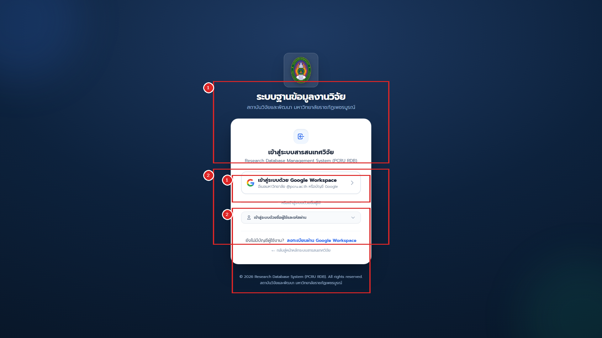
ระบบฐานข้อมูลงานวิจัย มรภ.เพชรบูรณ์ บังคับใช้นโยบายความปลอดภัยขั้นสูงเพื่อป้องกันบัญชีสแปมและบอทโจมตี โดยแบ่งช่องทางการเข้าสู่ระบบออกเป็น 2 ส่วนตามหมายเลขในภาพ:
-
หมายเลข
[1]ช่องทางหลัก: ปุ่มเข้าสู่ระบบด้วย Google Workspace SSO (@pcru.ac.th):- กลุ่มเป้าหมาย: คณาจารย์, นักวิจัย, ผู้ทรงคุณวุฒิ และเจ้าหน้าที่สังกัด มรภ.เพชรบูรณ์ ทุกท่าน
- ขั้นตอนการใช้งาน:
- คลิกปุ่ม "เข้าสู่ระบบด้วยบัญชี Google (@pcru.ac.th)" ในกรอบสีแดงหมายเลข
[1] - หน้าจอจะเปลี่ยนไปยังหน้าลงชื่อเข้าใช้ของ Google อย่างปลอดภัย (OAuth 2.0 OpenID Connect)
- เลือกหรือกรอกอีเมลสถาบัน
@pcru.ac.thพร้อมรหัสผ่านของมหาวิทยาลัย - เมื่อยืนยันตัวตนผ่าน ระบบจะตรวจสอบอีเมลกับฐานข้อมูลทันที:
- กรณีบัญชีเดิม: เข้าสู่แดชบอร์ดจัดการผลงานได้ทันที
- กรณีอาจารย์ใหม่: ระบบสร้างบัญชีสถานะ
รอตรวจสอบ (Pending)และส่งแจ้งเตือนให้เจ้าหน้าที่ผูกโปรไฟล์นักวิจัย
- คลิกปุ่ม "เข้าสู่ระบบด้วยบัญชี Google (@pcru.ac.th)" ในกรอบสีแดงหมายเลข
-
หมายเลข
[2]ช่องทางเฉพาะ: ฟอร์มเข้าสู่ระบบด้วยบัญชีผู้ใช้และรหัสผ่าน (Username / Password):- กลุ่มเป้าหมาย: สงวนสิทธิ์ไว้เฉพาะผู้ดูแลระบบระดับสูง (Super Admin) และบัญชีเจ้าหน้าที่ระบบฉุกเฉิน
- ขั้นตอนการใช้งาน:
- กรอกชื่อบัญชีผู้ใช้ (Username) และรหัสผ่าน (Password ความยาวขั้นต่ำ 8 ตัวอักษร)
- คลิกเลือกช่อง "จดจำการเข้าสู่ระบบ" (หากใช้งานบนอุปกรณ์ส่วนตัว)
- คลิกปุ่ม "เข้าสู่ระบบ" เพื่อเข้าสู่หน้าแดชบอร์ดหลังบ้าน
1.3 กระบวนการอนุมัติสมาชิกใหม่และการผูกโปรไฟล์นักวิจัยด้วย TomSelect (Onboarding & Profile Linking)
เมื่อมีอาจารย์ล็อกอินด้วยอีเมล @pcru.ac.th เข้ามาใหม่เป็นครั้งแรก สถานะของบัญชีจะเป็น unverified:
sequenceDiagram
autonumber
actor User as อาจารย์ใหม่
participant System as ระบบฐานข้อมูลวิจัย
actor Admin as ผู้ดูแลระบบ
User->>System: ล็อกอินผ่าน Google SSO ครั้งแรก
System-->>User: สร้างบัญชีชั่วคราว และแสดงหน้ารอยืนยันตัวตน
Admin->>System: เข้าเมนูจัดการผู้ใช้งาน
Admin->>System: คลิกปุ่มอนุมัติและผูกโปรไฟล์นักวิจัย
Admin->>System: ค้นหาชื่ออาจารย์ผ่าน TomSelect Typeahead
Admin->>System: กดยืนยันการผูกบัญชี Verify and Link
System-->>User: ปลดล็อกสิทธิ์ Researcher เข้าใช้งานระบบหลังบ้านได้ทันที
ขั้นตอนสำหรับผู้ดูแลระบบในการอนุมัติผู้ใช้งานใหม่:
- เข้าเมนู "จัดการผู้ใช้งาน" (
/backend/user) - คลิกปุ่มฟิลเตอร์ "รอยืนยันตัวตน (Pending Onboarding)"
- คลิกปุ่มสีเขียว "อนุมัติและเชื่อมโยงโปรไฟล์" ที่แถวของผู้ใช้งานใหม่
- หน้าต่าง Modal จะปรากฏขึ้น พร้อมช่องค้นหาแบบ TomSelect AJAX Search:
- พิมพ์ชื่อหรือนามสกุลของอาจารย์เพื่อค้นหาประวัติเดิมในตารางนักวิจัย
- ระบบจะแสดงรายชื่อ, คณะที่สังกัด, และรูปถ่ายเพื่อป้องกันการผูกบัญชีผิดคน
- คลิกปุ่ม "ยืนยันการอนุมัติและมอบสิทธิ์ Researcher"
- บัญชีของอาจารย์จะได้รับสิทธิ์นักวิจัย สามารถเข้าจัดการผลงานตนเองได้ทันที
1.4 ภาพรวมแดชบอร์ดหลังบ้านและแถบเมนูด้านซ้ายแบบ Accordion (Backend Layout & Left Sidebar Navigation)
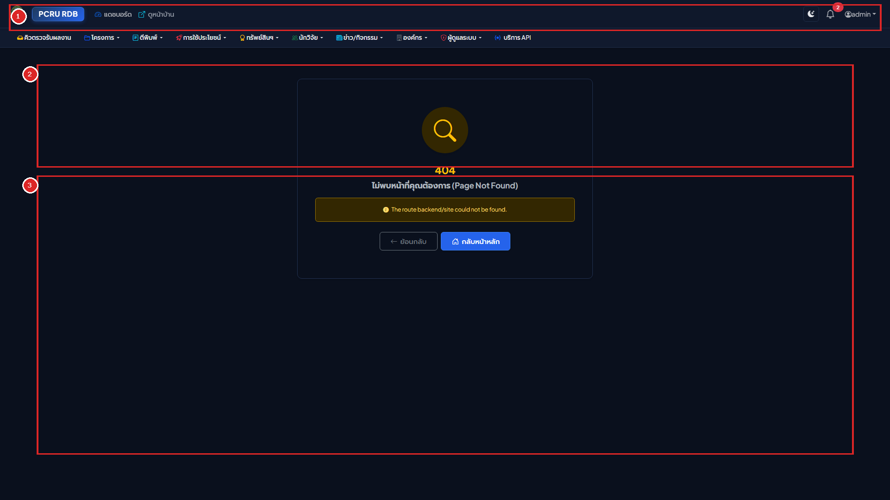
คำอธิบายส่วนประกอบแดชบอร์ดหลังบ้านและการนำทาง:
- แถบเมนูด้านข้างฝั่งซ้ายแบบยืดหยุ่น (Responsive Left Sidebar & Accordion Submenus -
<x-backend-sidebar />):- การจัดหมวดหมู่เมนูหลัก 5 กลุ่ม: แบ่งเป็น ภาพรวม & งานด่วน, จัดการผลงานวิจัย (โครงการวิจัย, ผลงานตีพิมพ์, การใช้ประโยชน์, ทรัพย์สินทางปัญญา), บุคลากร & หน่วยงาน (นักวิจัย, ข่าว/กิจกรรม, องค์กร/คณะ), การดูแลระบบ (Users, RBAC, API, Audit Logs) และ เอกสารและช่วยเหลือ (ศูนย์รวมคู่มือการใช้งานระบบทั้งหมด)
- ระบบพับเก็บอัตโนมัติ (Single-Open Accordion): เมื่อคลิกขยายหมวดเมนูหลักหมวดใด หมวดเมนูอื่นที่กางค้างอยู่จะยุบเก็บลงอัตโนมัติทันที (
data-bs-parent="#rdbSidebarAccordion") เพื่อไม่ให้แถบเมนูยาวล้นหน้าจอ - การจัดกลุ่มเมนูย่อยพร้อมสัญลักษณ์
-: ภายในแต่ละโมดูลจะแบ่งโซนย่อยด้วยหัวข้อกลุ่ม (เช่น ข้อมูลโครงการ, ประเมินเล่มรายงาน, การส่งออกข้อมูล) คั่นด้วยเส้นแบ่งโซน และนำหน้ารายการย่อยด้วยเครื่องหมาย-พร้อมระยะห่างระหว่างบรรทัดที่อ่านง่าย - กลุ่มตั้งค่าข้อมูลพื้นฐานแบบพับเก็บย่อยได้ (Collapsible Master Data): เมนูข้อมูลพื้นฐานของโครงการวิจัย (9 ตาราง) และผลงานตีพิมพ์ (4 ตาราง) ถูกรวมไว้ในปุ่มพับเก็บย่อย (
ตั้งค่าข้อมูลพื้นฐาน) ที่คลิกกางออกเฉพาะเมื่อต้องการตั้งค่าระบบ - เมนูคู่มือการใช้งานระบบ: ลิงก์ตรงสู่ศูนย์รวมคู่มือการใช้งานระบบทั้งหมด (
/manualsหรือ/backend/manuals) ในแท็บใหม่ เปิดอ่านได้ตลอดเวลา - รองรับทุกขนาดหน้าจออัตโนมัติ (Adaptive Screen Handling):
- หน้าจอคอมพิวเตอร์ขนาดใหญ่ (
>= 1200px): แสดงแถบเมนูด้านซ้ายเต็มรูปแบบ (265px) และสามารถคลิกปุ่มย่อเป็นโหมดไอคอน (68pxMini Sidebar) ได้ - หน้าจอโน้ตบุ๊กขนาดกลาง (
992px - 1199px): ย่อแถบเมนูเป็น Mini Sidebar อัตโนมัติ และขยายออกทันทีเมื่อเลื่อนเมาส์วาง (Hover Expand) - หน้าจอแท็บเล็ตและสมาร์ตโฟน (
< 992px): ซ่อนแถบเมนูไว้ด้านซ้ายและเปิดผ่านปุ่มเมนูแฮมเบอร์เกอร์ (Offcanvas Drawer)
- หน้าจอคอมพิวเตอร์ขนาดใหญ่ (
- หมายเลข
[1]แถบด้านบนสุดและศูนย์การแจ้งเตือน (Top Header Bar & Bell Notification):- ปุ่มย่อ/ขยายแถบเมนูด้านซ้าย, โลโก้
PCRU RDBและ ไอคอนคู่มือการใช้งานระบบทั้งหมด (📖) ข้างโลโก้ คลิกเปิดดูคู่มือทั้งหมดได้ทันที - ปุ่มสลับโหมดมืด/สว่าง (Theme Toggle): สลับระหว่างโหมด Daylight Editorial Slate และ Carbon-Navy Night Reading
- กระดิ่งแจ้งเตือน (Notification Bell): แสดงตัวเลขสีแดงเมื่อมีกิจกรรมใหม่ คลิกเพื่ออ่านและเปิดดูผลงานได้ทันที
- ปุ่มสลับบทบาทและโปรไฟล์: แสดงชื่อและบทบาทปัจจุบัน พร้อมเมนูลัด "คู่มือการใช้งานระบบทั้งหมด", ปุ่มสลับบทบาท (กรณีมีหลาย Role) และปุ่มออกจากระบบ
- ปุ่มย่อ/ขยายแถบเมนูด้านซ้าย, โลโก้
- หมายเลข
[2]การ์ดตัวเลขนับสถิติผลงานภาพรวม (Executive Counter Stat Cards):- แสดงยอดรวมสะสมของโครงการวิจัย, ผลงานตีพิมพ์, ทรัพย์สินทางปัญญา และการนำไปใช้ประโยชน์ โดยแสดงตัวเลขด้วยรูปแบบ
tabular-nums
- แสดงยอดรวมสะสมของโครงการวิจัย, ผลงานตีพิมพ์, ทรัพย์สินทางปัญญา และการนำไปใช้ประโยชน์ โดยแสดงตัวเลขด้วยรูปแบบ
- หมายเลข
[3]คิวงานด่วนและทางลัดโมดูลวิจัย (Workflow Shortcuts & Action Centers):- แสดงรายการงานที่ต้องดำเนินการด่วน เช่น งานที่รอตรวจรับ (
Pending Review), งานที่ถูกส่งกลับแก้ไข (Needs Revision), และคำขอปลดล็อก (Unlock Requests)
- แสดงรายการงานที่ต้องดำเนินการด่วน เช่น งานที่รอตรวจรับ (
บทที่ 2: โครงสร้างบทบาท สิทธิ์การใช้งาน และการจำลองสิทธิ์ (RBAC & Impersonation)
2.1 ตารางวิเคราะห์ระดับสิทธิ์และขอบเขตข้อมูล (Role Permission Matrix)
| ระดับบทบาท (Role) | ขอบเขตข้อมูล (Scope) | สิทธิ์การดำเนินการหลัก |
|---|---|---|
| Super Admin / The Creator | ทั้งมหาวิทยาลัย | สิทธิ์สูงสุดทุกโมดูล, จัดการ RBAC, จำลองสิทธิ์, ดู Audit Logs, ตั้งค่านโยบาย |
| Admin / Admin Research | ทั้งมหาวิทยาลัย | ตรวจรับและอนุมัติผลงานทุกโมดูล, มอบหมายผู้ทรงคุณวุฒิ, ส่งออก Excel & DSpace |
Domain Admins (Admin Project, Admin Published, Admin Dip, Admin Utilize) |
ทั้งมหาวิทยาลัย (เฉพาะโมดูล) | สิทธิ์แก้ไขและอนุมัติข้อมูลในโมดูลที่ตนเองรับผิดชอบได้โดยตรงโดยไม่ต้องรอปลดล็อก |
| Faculty Coordinator | เฉพาะคณะตนเอง | ตรวจสอบและกลั่นกรองผลงานของอาจารย์ภายในคณะก่อนส่งสถาบันวิจัยฯ |
| Researcher (นักวิจัย) | เฉพาะผลงานตนเอง | สร้างฉบับร่าง, ส่งตรวจรับ, อัปโหลดไฟล์, ยื่นขอปลดล็อกแก้ไข, ประเมินรายงานที่ได้รับมอบหมาย |
| Reviewer (ผู้ทรงคุณวุฒิ) | เฉพาะโครงการที่ได้รับมอบหมาย | ตอบรับงานประเมิน, เปิดอ่านเล่มรายงาน, บันทึกคะแนนและข้อเสนอแนะ |
2.2 การจำกัดขอบเขตข้อมูลนักวิจัยอย่างเข้มงวด (Strict Researcher Isolation)
เพื่อความปลอดภัยและความเป็นส่วนตัวของข้อมูลวิชาการ ระบบบังคับใช้ Eloquent Global Scopes:
- เมื่ออาจารย์เข้าสู่ระบบในบทบาท
Researcherระบบจะดึงและแสดงผล เฉพาะโครงการและบทความที่มีชื่ออาจารย์เป็นหัวหน้าโครงการหรือผู้แต่งร่วมเท่านั้น - อาจารย์ไม่สามารถเปิดดูหน้าแก้ไข หรือพิมพ์ URL ไอดีของโครงการอาจารย์ท่านอื่นได้ หากพยายามเข้าถึง ระบบจะตอบกลับด้วยรหัสปฏิเสธสิทธิ์
403 Forbiddenทันที
2.3 ขั้นตอนการจำลองสิทธิ์ผู้ใช้งาน (User Impersonation)
ฟังก์ชันสำหรับ Super Admin เพื่อใช้ช่วยเหลืออาจารย์ที่มีปัญหาการใช้งาน:
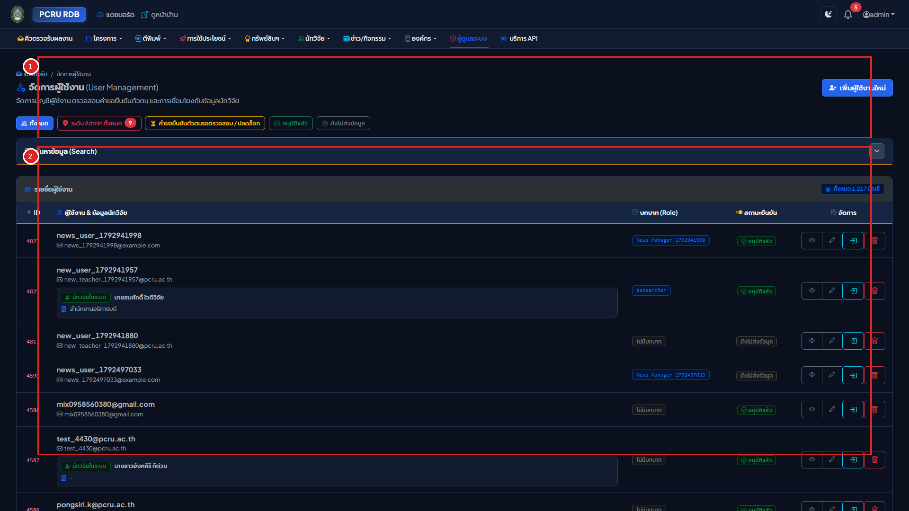
flowchart LR
Step1["1. ผู้ดูแลระบบเข้าเมนูจัดการผู้ใช้\n(/backend/user)"] --> Step2["2. คลิกปุ่ม 'จำลองสิทธิ์ Impersonate'\nที่แถวของอาจารย์"]
Step2 --> Step3["3. ระบบเก็บรหัสผู้ดูแลเดิมใน Session\nและสลับมุมมองเป็นนักวิจัยทันที"]
Step3 --> Step4["4. แถบสีเหลืองแจ้งเตือนปรากฏบนสุด:\n'กำลังจำลองสิทธิ์เป็น... พร้อมปุ่มหยุดจำลองสิทธิ์'"]
Step4 --> Step5["5. คลิกปุ่ม 'หยุดจำลองสิทธิ์'\n➔ คืนสิทธิ์กลับเป็น Super Admin อัตโนมัติ"]
คำอธิบายส่วนประกอบตามหมายเลขในภาพ:
- หมายเลข
[1]แผงค้นหาและตัวกรองบัญชีผู้ใช้งาน (User Directory Search & Filters):- ช่องค้นหาชื่อ-อีเมล: พิมพ์ชื่ออาจารย์, รหัสผู้ใช้ หรืออีเมล
@pcru.ac.th - ตัวกรองบทบาท (Roles): กรองดูเฉพาะกลุ่ม
Researcher,Reviewer,Admin, หรือSuper Admin - ตัวกรองสถานะการยืนยัน: กรองดูเฉพาะบัญชีที่
รอยืนยันตัวตน (Pending)เพื่อทำการ Onboarding
- ช่องค้นหาชื่อ-อีเมล: พิมพ์ชื่ออาจารย์, รหัสผู้ใช้ หรืออีเมล
- หมายเลข
[2]ตารางรายชื่อผู้ใช้งานและปุ่มจำลองสิทธิ์ (Users Table & Actions):- ข้อมูลบัญชี: แสดงชื่อ-นามสกุล, อีเมลสถาบัน, บทบาท, และสถานะการผูกโปรไฟล์นักวิจัย
- ปุ่มจำลองสิทธิ์ (Impersonate): ปุ่มสีเหลืองไอคอนสลับตัวบุคคล คลิกเพื่อจำลองสิทธิ์เข้าไปมองเห็นหน้าจอเหมือนอาจารย์ท่านนั้นทุกประการ
- ปุ่มแก้ไขและจัดการสิทธิ์ (Edit): กำหนดบทบาท หรือระงับการใช้งานบัญชี
บทที่ 3: วงจรชีวิตการส่งร่าง ตรวจสอบ และอนุมัติเปิดเผยผลงาน (Workflow Lifecycle: WF-01 ถึง WF-07)
3.1 แผนผังวงจรสถานะงานวิจัย (State-Driven Workflow Diagram)
stateDiagram-v2
[*] --> Draft : WF-01 นักวิจัยสร้างฉบับร่าง
Draft --> PendingReview : WF-02 นักวิจัยกดส่งตรวจสอบ Submit
PendingReview --> RevisionRequired : WF-04 เจ้าหน้าที่ส่งกลับแก้ไข Reject
RevisionRequired --> PendingReview : นักวิจัยแก้ไขและกดส่งใหม่
PendingReview --> Published : WF-05 เจ้าหน้าที่อนุมัติเผยแพร่
Published --> UnlockRequested : WF-06 นักวิจัยขอปลดล็อกแก้ไข
UnlockRequested --> Draft : WF-07 เจ้าหน้าที่อนุมัติปลดล็อก
UnlockRequested --> Published : เจ้าหน้าที่ปฏิเสธคำขอปลดล็อก
3.2 ขั้นตอนการทำงานสำหรับนักวิจัย (Researcher Workflow Guide)
- การสร้างฉบับร่าง (
WF-01 Draft):- คลิกปุ่ม "+ เพิ่มข้อมูล" กรอกข้อมูลโครงการหรือผลงาน
- บันทึกข้อมูล รายการจะอยู่ในสถานะ
ฉบับร่าง (Draft)(มีปุ่มแก้ไขและลบได้อิสระ ข้อมูลยังไม่แสดงหน้าบ้าน)
- การส่งตรวจสอบ (
WF-02 Submit for Review):- เมื่อแนบไฟล์ PDF และกรอกข้อมูลครบแล้ว ให้เข้าหน้ารายละเอียดของผลงาน
- คลิกปุ่มสีน้ำเงิน "ส่งตรวจสอบ (Submit for Review)"
- สถานะจะเปลี่ยนเป็น
รอตรวจสอบ (Pending Review)และแบบฟอร์มจะถูกล็อก
- กรณีได้รับแจ้งให้แก้ไข (
WF-04 Revision Required):- หากมีข้อผิดพลาด ระบบจะแจ้งเตือนผ่านกระดิ่ง พร้อมแสดงกล่องข้อความสีแดงระบุ เหตุผลจากเจ้าหน้าที่
- คลิกปุ่ม "แก้ไขข้อมูล" ดำเนินการปรับปรุงตามคำแนะนำ แล้วคลิก "ส่งตรวจสอบ" ใหม่อีกครั้ง
- การขอปลดล็อกแก้ไขหลังเผยแพร่แล้ว (
WF-06 Request Unlock):- ผลงานที่มีสถานะ
เผยแพร่แล้ว (Published)จะถูกล็อกห้ามแก้ไข - หากต้องการแก้ไข ให้นักวิจัยคลิกปุ่ม "ขอเปิดสิทธิ์แก้ไข (Request Unlock)" กรอกเหตุผล แล้วส่งคำขอไปยัง Admin
- ผลงานที่มีสถานะ
3.3 ขั้นตอนการทำงานสำหรับผู้ดูแลระบบในคิวงานตรวจสอบ (Review Queue Management)
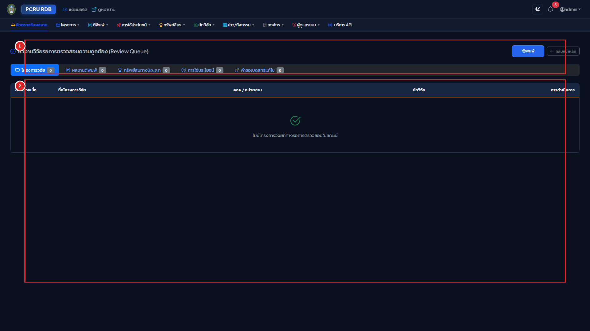
คำอธิบายส่วนประกอบตามหมายเลขในภาพ:
- หมายเลข
[1]แถบแท็บประเภทผลงานในคิวตรวจสอบ (Queue Category Tabs):- แท็บโครงการวิจัย (
Projects Queue): รายการโครงการวิจัยที่นักวิจัยกดส่งตรวจรับ - แท็บผลงานตีพิมพ์ (
Publications Queue): รายการบทความวิจัยที่ส่งตรวจพร้อมไฟล์ PDF - แท็บทรัพย์สินทางปัญญา (
IP Queue): รายการคำขอสิทธิบัตร/อนุสิทธิบัตร/ลิขสิทธิ์ - แท็บการนำไปใช้ประโยชน์ (
Utilizations Queue): รายการรายงานการใช้ประโยชน์และหลักฐานรับรอง - แท็บคำขอปลดล็อก (
Unlock Requests): ผลงานที่เผยแพร่แล้ว แต่นักวิจัยขอกลับมาแก้ไข
- แท็บโครงการวิจัย (
- หมายเลข
[2]ตารางรายการคิวงานและปุ่มดำเนินการ (Review Queue Table & Action Buttons):- ข้อมูลผลงาน: แสดงชื่อผลงาน, ชื่อนักวิจัยผู้ส่ง, วันที่ส่งตรวจรับ (รูปแบบ พ.ศ.), และไฟล์เอกสารแนบ
- ปุ่มอนุมัติและเผยแพร่ (Approve - สีเขียว
WF-05): ตรวจสอบเอกสารถูกต้องสมบูรณ์ คลิกอนุมัติ ผลงานจะเผยแพร่ขึ้นหน้าบ้านทันที พร้อมสกัดหน้าแรกสร้างภาพปก.webpและส่งกระดิ่งแจ้งเตือนนักวิจัย - ปุ่มส่งกลับแก้ไข (Reject - สีแดง
WF-04): คลิกเพื่อเปิดกล่องข้อความ ระบุจุดที่ต้องแก้ไข และข้อเสนอแนะ ผลงานจะถูกส่งกลับไปให้นักวิจัยแก้ไขในสถานะNeeds Revision - ปุ่มดูตัวอย่างฉบับเต็ม (View Details): คลิกเพื่อตรวจสอบความสมบูรณ์ของบทคัดย่อ คณะผู้วิจัย และไฟล์ PDF ก่อนตัดสินใจ
3.4 ระบบแจ้งเตือนทางกระดิ่งและอีเมล (Notification System)
- กระดิ่งแจ้งเตือน (Notification Bell): แสดงตัวเลขสีแดงเมื่อมีกิจกรรมใหม่ (เช่น ส่งงานใหม่, ส่งกลับแก้ไข, อนุมัติเผยแพร่, หรือมอบหมายงานประเมิน)
- เมื่อคลิกที่รายการแจ้งเตือน ระบบจะเปิดไปยังหน้าผลงานนั้นโดยตรง พร้อมทำเครื่องหมายว่าอ่านแล้วอัตโนมัติ
บทที่ 4: การบริหารจัดการโครงการวิจัยขั้นสูง ระบบนับหน้า PDF และปก .webp
4.1 พจนานุกรมฟิลด์แบบฟอร์มบันทึกโครงการวิจัย (Project Form Field Dictionary)
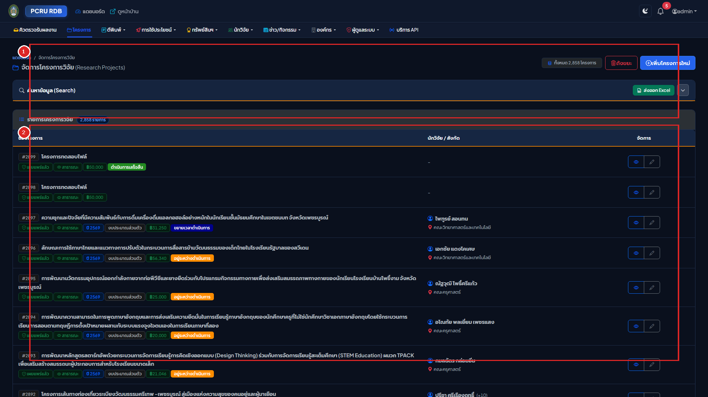
คำอธิบายส่วนประกอบตามหมายเลขในภาพ:
- หมายเลข
[1]กล่องค้นหาและตัวกรองสถานะโครงการวิจัยหลังบ้าน (Search & Status Filters):- ช่องค้นหาชื่อโครงการและนักวิจัย: พิมพ์คำค้นหาเพื่อค้นหาข้อมูลหลังบ้านอย่างรวดเร็ว
- ตัวกรองสถานะโครงการ: เลือกกรองตามสถานะ
Draft (ฉบับร่าง),Pending Review (รอตรวจสอบ),Published (เผยแพร่แล้ว), หรือCompleted (เสร็จสิ้นโครงการ) - ปุ่มเพิ่มข้อมูลใหม่: คลิกปุ่มสีเขียว "+ เพิ่มโครงการวิจัยใหม่" เพื่อเปิดแบบฟอร์มบันทึกข้อมูล
- หมายเลข
[2]ตารางรายการโครงการวิจัยและปุ่มดำเนินการ (Projects Table & Management Actions):- คอลัมน์ชื่อโครงการและงบประมาณ: แสดงชื่อโครงการวิจัย, แหล่งทุน, ยอดงบประมาณรวม, และปีงบประมาณ พ.ศ.
- ป้ายแสดงจำนวนหน้า PDF อัตโนมัติ: แสดงป้ายระบุจำนวนหน้าเอกสาร เช่น
<i class="bi bi-file-earmark-text"></i> 101 หน้าซึ่งระบบตรวจนับให้อัตโนมัติทันทีที่อัปโหลดไฟล์ - ปุ่มดำเนินการ (Actions):
- ปุ่มสีฟ้า
ดูข้อมูล (View): ตรวจสอบรายละเอียดฉบับเต็ม - ปุ่มสีเหลือง
แก้ไข (Edit): ปรับปรุงข้อมูล (ใช้ได้เมื่ออยู่ในสถานะ Draft หรือได้รับอนุมัติปลดล็อก) - ปุ่มสีน้ำเงิน
ส่งตรวจสอบ (Submit for Review): ส่งงานเข้าสู่คิวตรวจสอบของสถาบันวิจัยฯ
- ปุ่มสีฟ้า
| ชื่อฟิลด์ในฟอร์ม | ประเภทข้อมูล | เงื่อนไขความถูกต้อง (Validation) | คำอธิบาย |
|---|---|---|---|
ปีงบประมาณ (year_id) |
Dropdown | จำเป็นต้องกรอก (Required) | ปีงบประมาณ พ.ศ. ที่จัดสรรทุน |
ประเภททุนวิจัย (pt_id) |
Dropdown | จำเป็นต้องกรอก (Required) | ประเภทแหล่งทุนวิจัยหลัก |
ประเภทโครงการย่อย (pts_id) |
Dropdown | ไม่บังคับ (Nullable) | แหล่งทุนหรือกลุ่มโครงการย่อย |
รหัสโครงการ (pro_code) |
Text (50) | ไม่บังคับ (Nullable) | รหัสสัญญาโครงการวิจัย |
ชื่อโครงการ (ไทย) (pro_nameTH) |
Textarea | จำเป็นต้องกรอก (Required) | ชื่อเต็มโครงการภาษาไทย |
ชื่อโครงการ (อังกฤษ) (pro_nameEN) |
Textarea | ไม่บังคับ (Nullable) | ชื่อเต็มโครงการภาษาอังกฤษ |
งบประมาณรวม (pro_budget) |
Decimal | ต้องเป็นตัวเลข $\ge 0$ | จำนวนเงินงบประมาณรวมทั้งโครงการ (บาท) |
วันที่เริ่มต้น (pro_date_start) |
Buddhist Date | รูปแบบ วว/ดด/ปปปป (พ.ศ.) | วันที่เริ่มต้นสัญญา |
วันที่สิ้นสุด (pro_date_end) |
Buddhist Date | ต้อง $\ge$ pro_date_start |
วันที่สิ้นสุดสัญญา |
ไฟล์เล่มรายงาน (pro_file) |
File Upload | เฉพาะไฟล์ PDF ขนาด $\le 100\text{MB}$ | ไฟล์เล่มรายงานวิจัยฉบับสมบูรณ์ |
4.2 การจัดการสัดส่วนร้อยละของคณะผู้วิจัย (Research Weighting: รวม 100%)
ในหน้ารายละเอียดโครงการวิจัย ผู้ใช้สามารถเพิ่มรายชื่อคณะผู้วิจัยและกำหนดตำแหน่ง:
- ตำแหน่งในโครงการ: หัวหน้าโครงการวิจัย, ผู้ร่วมวิจัย, หรือที่ปรึกษาโครงการ
- สัดส่วนการทำวิจัย (%): ตัวเลขสัดส่วนการมีส่วนร่วมในโครงการ
- กฎความถูกต้อง: ผลรวมของสัดส่วนร้อยละของคณะผู้วิจัยทุกคนในโครงการ จะต้องรวมกันได้ 100% พอดี เพื่อความถูกต้องในการคิดภาระงานวิชาการและการประกันคุณภาพ
4.3 สถาปัตยกรรมเครื่องยนต์ PDF อัตโนมัติ (Automated PDF Engine: 4-Tier Counter & 5-Tier WebP)
ทันทีที่มีการอัปโหลดไฟล์ PDF เล่มรายงานวิจัย (pro_file) หรือไฟล์บทความ (pub_file) ระบบจะประมวลผลอัตโนมัติเบื้องหลัง:
flowchart TD
PDF["อัปโหลดไฟล์ PDF เข้าสู่ระบบ"] --> Storage["จัดเก็บไฟล์ด้วยรหัสปลอดภัย UUID Safe Storage"]
Storage --> Counter["1. ตรวจนับจำนวนหน้า (4-Tier Page Counter)"]
Storage --> Cover["2. สกัดภาพปกหน้าแรก (5-Tier WebP Generator)"]
Counter --> T1["Tier 1: Poppler pdftotext (แม่นยำ 99.99%)"]
T1 -->|สำรอง 1| T2["Tier 2: Smalot PdfParser"]
T2 -->|สำรอง 2| T3["Tier 3: setasign FPDI"]
T3 -->|สำรอง 3| T4["Tier 4: Fast Regex Stream Scan"]
Counter --> SavePage["บันทึกจำนวนหน้าลง pro_page_num อัตโนมัติ"]
Cover --> C1["Tier 1: Poppler pdftoppm CLI"]
C1 -->|สำรอง 1| C2["Tier 2: MuPDF PyMuPDF Full-Page Rasterizer"]
C2 -->|สำรอง 2| C3["Tier 3: PHP Imagick"]
C3 -->|สำรอง 3| C4["Tier 4: Ghostscript gs CLI"]
C4 -->|สำรอง 4| C5["Tier 5: Academic GD Cover Fallback (ฟอนต์ Leelawadee UI)"]
Cover --> SaveCover["สร้างภาพปก .webp คุณภาพสูง 85% กะทัดรัด คมชัด"]
ปุ่มดึงภาพหน้าปกไฟล์ใหม่ อีกครั้ง (Regenerate PDF Cover):
ในกรณีที่ไฟล์เอกสาร PDF มีการเปลี่ยนแปลง หรือต้องการประมวลผลสกัดภาพหน้าปกใหม่โดยไม่ต้องอัปโหลดไฟล์ซ้ำ ผู้ใช้งานสามารถกดปุ่ม "ดึงภาพหน้าปกไฟล์ใหม่ อีกครั้ง" (<button class="btn btn-outline-secondary">) ในกล่องไฟล์เอกสารของหน้าดูรายละเอียดโครงการวิจัย (/backend/rdb_project/{id}) หรือผลงานตีพิมพ์ (/backend/rdb_published/{id}) ระบบจะรันการสกัดหน้าปกและส่งพารามิเตอร์ Cache-Busting ?v= เพื่อให้เบราว์เซอร์แสดงภาพหน้าปกที่อัปเดตใหม่ทันที
4.4 การสลับระดับสิทธิ์เปิดเผยเล่มรายงานวิจัย 3 สถานะ (pro_file_show Toggle)
ในหน้ารายละเอียดโครงการวิจัย ผู้ดูแลระบบสามารถคลิกสลับสถานะการเปิดเผยไฟล์เล่มสมบูรณ์ได้ 3 สถานะ:
เปิด (Public - ค่า 0): ประชาชนทั่วไปสามารถดาวน์โหลดไฟล์เล่มสมบูรณ์ได้ปิด (Concealed - ค่า 1): ปกปิดเล่มรายงานไม่ให้ดาวน์โหลดภายนอก (ใช้คุ้มครองสิทธิ์การจดสิทธิบัตร)ร่าง (Draft - ค่า 2): เอกสารอยู่ระหว่างตรวจรับ ยังไม่พร้อมเผยแพร่
บทที่ 5: ระบบตรวจประเมินเล่มรายงานวิจัยฉบับสมบูรณ์ (Peer Review Subsystem)
5.1 สถาปัตยกรรมการประเมินแบบ Single-Blind Peer Review
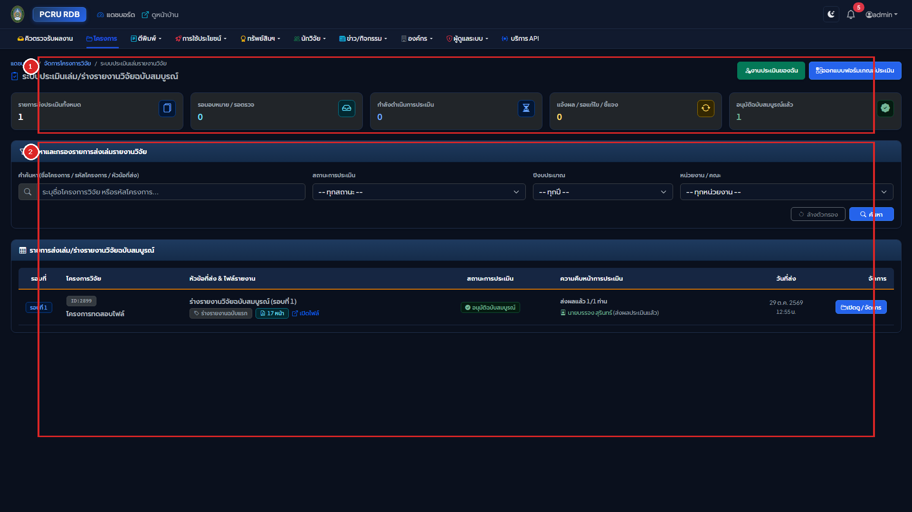
คำอธิบายส่วนประกอบตามหมายเลขในภาพ:
- หมายเลข
[1]แถบแท็บสถานะการประเมินและเกณฑ์แบบประเมิน (Review Tabs & Rubrics Controls):- แท็บรอบการประเมิน: สลับดูรายการเล่มรายงานที่
รอมอบหมายผู้ทรงฯ,อยู่ระหว่างประเมิน,ส่งเล่มแก้ไขรอบที่ 2, หรือประเมินเสร็จสิ้น - ปุ่มจัดการเกณฑ์แบบประเมิน (Rubrics Templates): สร้างและกำหนดชุดคำถามการประเมินและสเกลคะแนน
- แท็บรอบการประเมิน: สลับดูรายการเล่มรายงานที่
- หมายเลข
[2]ตารางรายการเล่มรายงานวิจัยในกระบวนการประเมิน (Peer Review Submissions Table):- ข้อมูลโครงการวิจัย: แสดงชื่อโครงการ, คณะผู้วิจัย, แหล่งทุน, และไฟล์เล่มร่างรายงานวิจัย
- สถานะผู้ทรงคุณวุฒิ (Reviewer Status): แสดงจำนวนผู้ทรงคุณวุฒิที่ตอบรับการประเมิน (เช่น ตอบรับ 2/3 ท่าน)
- ปุ่มมอบหมายผู้ทรงคุณวุฒิ (Assign Reviewers): คลิกเพื่อเปิด Modal ค้นหาผู้ทรงคุณวุฒิตามความเชี่ยวชาญ
- ปุ่มดูผลการประเมินและข้อเสนอแนะ: แสดงคะแนนเฉลี่ยและคอมเมนต์เชิงวิชาการ
flowchart TD
S1["1. นักวิจัยส่งร่างเล่มรายงานสมบูรณ์\n(Initial Report Submission)"] --> S2["2. แอดมินคัดเลือกและมอบหมายผู้ทรงฯ\n(Assign Single-Blind Reviewers)"]
S2 --> S3["3. ผู้ทรงฯ รับการแจ้งเตือนและประเมินเกณฑ์รูบริก\n(Rubric Scoring & Academic Comments)"]
S3 --> S4{"4. ผลการประเมินของผู้ทรงฯ"}
S4 -->|ผ่านโดยไม่มีเงื่อนไข| S7["7. แอดมินอนุมัติปิดโครงการ\n(Final Approval)"]
S4 -->|มีข้อเสนอแนะให้ปรับปรุง| S5["5. ส่งคอมเมนต์ให้นักวิจัยแก้ไข\n(Revision Required)"]
S5 --> S6["6. นักวิจัยอัปโหลดเล่มแก้ไข หรือยื่นข้อโต้แย้ง\n(Revised Draft / Dispute)"]
S6 --> S7
S7 --> S8["8. ระบบอัตโนมัติ:\n• บันทึกไฟล์ลง pro_file\n• ตรวจนับหน้า pro_page_num\n• สกัดภาพปก .webp\n• เปิดเผยแพร่สู่หน้าบ้านทันที"]
ระบบประเมินรายงานวิจัยฉบับสมบูรณ์ของ มรภ.เพชรบูรณ์ ทำงานแบบ Single-Blind Peer Review:
- ผู้ทรงคุณวุฒิ (Reviewer): จะทราบชื่อโครงการและชื่อคณะผู้วิจัย เพื่อประเมินความสอดคล้องกับความเชี่ยวชาญ
- นักวิจัย (Researcher): จะ ไม่ทราบ ชื่อ นามสกุล หรือสังกัดของผู้ทรงคุณวุฒิที่ประเมินผลงานตนเอง เพื่อความเป็นกลางทางวิชาการ
5.2 การออกแบบเกณฑ์และสเกลคะแนนแบบประเมิน (Rubric Form Designer)
ผู้ดูแลระบบสามารถสร้างและกำหนดหัวข้อแบบประเมินได้ที่เมนู "เกณฑ์แบบประเมิน" (/backend/project-reviews/templates):
- การสร้างชุดแบบประเมิน (Template): เช่น "แบบประเมินโครงการวิจัยทุนงบประมาณแผ่นดิน" หรือ "แบบประเมินงานวิจัยเชิงพื้นที่"
- การเพิ่มหัวข้อเกณฑ์ (Criteria):
- ระบุหัวข้อการประเมิน (เช่น ความสมบูรณ์ของระเบียบวิธีวิจัย, ความคุ้มค่าทางวิชาการ, การอภิปรายผล)
- กำหนดคะแนนเต็มของแต่ละข้อ
- กำหนดสเกลการให้คะแนน (เช่น สเกล 1-5 หรือใส่คะแนนดิบ)
5.3 วงจรสถานะการส่งเล่มรายงาน 8 ขั้นตอน (Submission States Lifecycle)
การประเมินรายงานวิจัยดำเนินไปตาม 8 สถานะมาตรฐาน:
| สถานะ (Status) | ชื่อสถานะภาษาไทย | คำอธิบายบทบาทการทำงาน |
|---|---|---|
submitted |
ส่งเล่มประเมินแล้ว | นักวิจัยส่งไฟล์ PDF เล่มรายงาน อยู่ในคิวรอ Admin มอบหมายผู้ทรงคุณวุฒิ |
under_review |
กำลังประเมิน | ผู้ทรงคุณวุฒิตอบรับงานประเมินและอยู่ระหว่างตรวจอ่านและให้คะแนน |
round_closed |
แจ้งผลการประเมินแล้ว | ผู้ทรงคุณวุฒิส่งผลประเมินครบทุกท่าน และ Admin ปิดรอบแจ้งผล |
revision_required |
รอการแก้ไขปรับปรุง | ผลการประเมินมีข้อเสนอแนะให้นักวิจัยนำกลับไปแก้ไขปรับปรุงรูปเล่ม |
disputed |
ยื่นคำชี้แจง/โต้แย้ง | นักวิจัยส่งคำชี้แจงทางวิชาการกรณีมีความเห็นต่างจากข้อเสนอแนะ |
final_submitted |
ส่งฉบับแก้ไขสมบูรณ์แล้ว | นักวิจัยส่งเล่มรายงานฉบับแก้ไขสมบูรณ์ตามข้อเสนอแนะครบถ้วนแล้ว |
approved |
อนุมัติฉบับสมบูรณ์ | Admin ตรวจรับและอนุมัติเล่มสมบูรณ์ ปิดโครงการวิจัยอย่างเป็นทางการ |
rejected |
ไม่ผ่านการประเมิน | เล่มรายงานไม่ผ่านเกณฑ์มาตรฐานทางวิชาการขั้นต่ำ |
5.4 การมอบหมายผู้ทรงคุณวุฒิ และการบันทึกผลการประเมินของผู้ทรงคุณวุฒิ
- การมอบหมายผู้ทรงคุณวุฒิ (Admin Action):
- ในหน้าโครงการ คลิกปุ่ม "มอบหมายผู้ทรงคุณวุฒิ"
- เลือกผู้ทรงคุณวุฒิ 2-3 ท่านจากฐานข้อมูล และกำหนดวันที่ครบกำหนดส่งผลประเมิน (Deadline)
- การประเมินผล (Reviewer Action):
- ผู้ทรงคุณวุฒิเข้าเมนู "งานประเมินของฉัน (My Reviews)" (
/backend/project-reviews/my-reviews) - คลิก "ตอบรับการประเมิน" ดาวน์โหลดไฟล์เล่มรายงานไปตรวจอ่าน
- กรอกคะแนนรายข้อตามแบบฟอร์มรูบริก พร้อมพิมพ์ความเห็นเชิงวิชาการ และสามารถแนบไฟล์เล่มรายงานที่คอมเมนต์ข้อความกลับเข้าระบบได้
- ผู้ทรงคุณวุฒิเข้าเมนู "งานประเมินของฉัน (My Reviews)" (
5.5 กระบวนการส่งเล่มแก้ไขรอบที่ 2 และการยื่นคำชี้แจงโต้แย้ง (Dispute Workflow)
- กรณีแก้ไขตามข้อเสนอแนะ: นักวิจัยปรับปรุงเนื้อหาตามคอมเมนต์ แล้วอัปโหลดไฟล์เล่มแก้ไขในหมวด
Revised Draft - กรณียื่นคำชี้แจงทางวิชาการ (Dispute): หากนักวิจัยมีความเห็นต่างในบางประเด็น สามารถคลิกปุ่ม "ยื่นคำชี้แจง/ข้อโต้แย้ง" พิมพ์เหตุผลและแนบเอกสารอ้างอิงทางวิชาการ เพื่อให้ผู้ทรงคุณวุฒิหรือคณะกรรมการพิจารณาประกอบ
5.6 การสรุปผลคะแนนและการอนุมัติปิดโครงการเล่มสมบูรณ์ (Final Approval)
- เมื่อผู้ทรงคุณวุฒิประเมินครบและนักวิจัยส่งเล่มฉบับสมบูรณ์แล้ว
- ผู้ดูแลระบบกดปุ่ม "อนุมัติเล่มรายงานฉบับสมบูรณ์ (Approve Final Report)"
- ระบบจะดำเนินการอัตโนมัติ: คัดลอกไฟล์ไปยัง
pro_file, บันทึกจำนวนหน้าลงpro_page_num, สกัดหน้าแรกสร้างภาพปก.webp, ปรับสถานะโครงการเป็นเสร็จสิ้น และเปิดเผยแพร่สู่หน้าบ้านทันที
บทที่ 6: การบริหารจัดการผลงานตีพิมพ์ ทรัพย์สินทางปัญญา และการใช้ประโยชน์
6.1 การจัดการผลงานตีพิมพ์ (/backend/rdb_published)
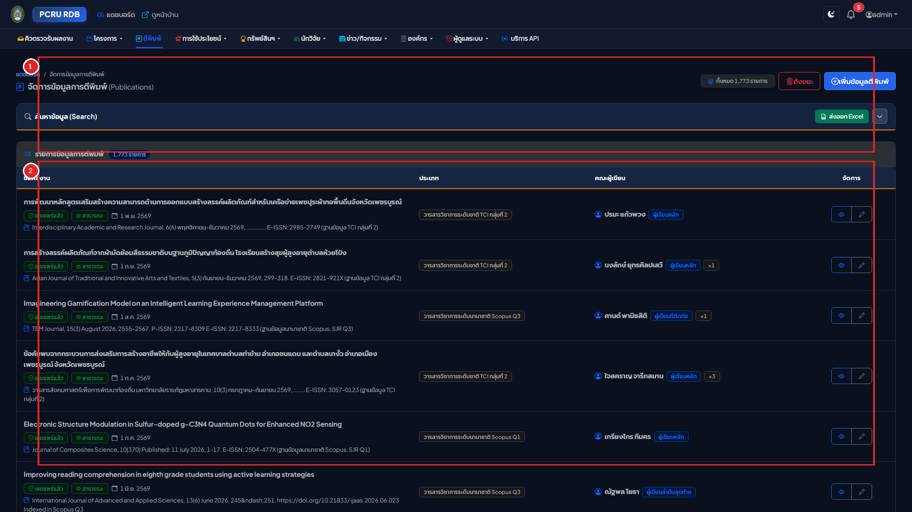
คำอธิบายส่วนประกอบตามหมายเลขในภาพ:
- หมายเลข
[1]แผงค้นหาและตัวกรองผลงานตีพิมพ์หลังบ้าน (Published Filter Bar):- ช่องค้นหาชื่อบทความและวารสาร: ค้นหาบทความตามชื่อเรื่อง, DOI หรือชื่อวารสาร
- ตัวกรองระดับฐานข้อมูล (Scopus / TCI): กรองดูเฉพาะผลงานในระดับฐานข้อมูลที่ต้องการตรวจสอบ
- ตัวกรองสถานะงาน: กรองดูเฉพาะ
Draft,Pending Review, หรือPublished - ปุ่มเพิ่มผลงานใหม่: คลิกปุ่มสีเขียว "+ เพิ่มผลงานตีพิมพ์ใหม่"
- หมายเลข
[2]ตารางจัดการบทความตีพิมพ์และปุ่มดำเนินการ (Publications Table & Actions):- ข้อมูลบทความและผู้แต่ง: แสดงชื่อบทความ, ชื่อวารสาร, ปี พ.ศ. และป้ายระดับฐานข้อมูล
- ป้ายตรวจนับหน้าอัตโนมัติ: แสดงจำนวนหน้าของไฟล์ PDF ที่ระบบตรวจนับให้
- ปุ่มดำเนินการ (Actions):
- ปุ่ม
ดูข้อมูล (View): ตรวจสอบรายละเอียดและรายชื่อผู้แต่ง - ปุ่ม
แก้ไข (Edit): บันทึกข้อมูลวารสารและอัปโหลดไฟล์ Full Paper - ปุ่ม
จัดการผู้แต่ง (Authors): ระบุสัดส่วนการมีส่วนร่วม (%) และกำหนด First/Corresponding Author
- ปุ่ม
6.2 การจัดการทรัพย์สินทางปัญญา (/backend/rdb_dip)
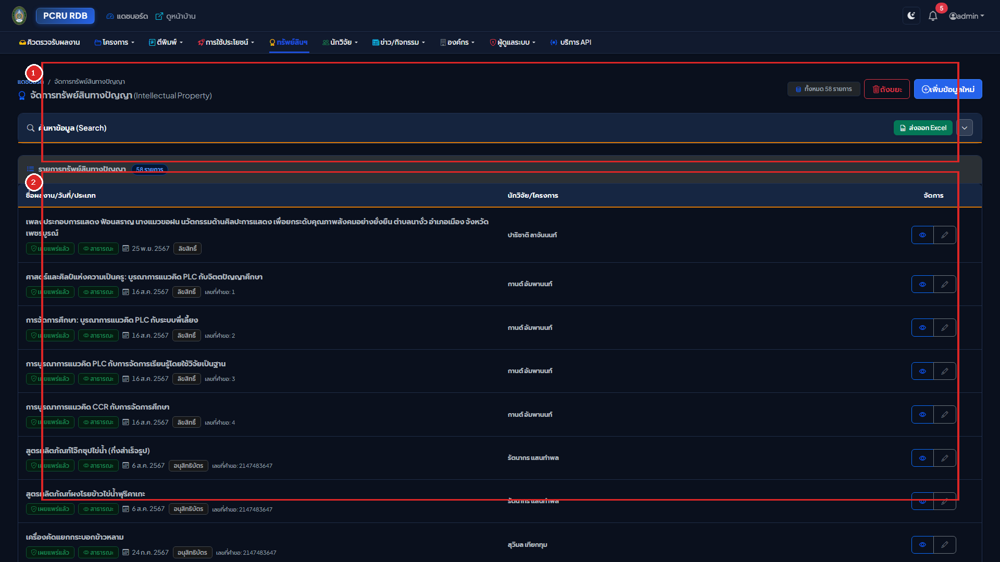
คำอธิบายส่วนประกอบตามหมายเลขในภาพ:
- หมายเลข
[1]แผงค้นหาและตัวกรองทรัพย์สินทางปัญญาหลังบ้าน (IP Filter Bar):- ช่องค้นหาชื่อนวัตกรรม: พิมพ์ชื่อผลงาน หรือชื่อสิ่งประดิษฐ์
- ตัวกรองประเภท DIP: สิทธิบัตรการประดิษฐ์, อนุสิทธิบัตร, สิทธิบัตรการออกแบบ หรือลิขสิทธิ์
- ปุ่มเพิ่มข้อมูลใหม่: คลิกปุ่มสีเขียว "+ เพิ่มทรัพย์สินทางปัญญาใหม่"
- หมายเลข
[2]ตารางจัดการข้อมูลสิทธิบัตรและลิขสิทธิ์ (IP Management Table & Actions):- ข้อมูลสิ่งประดิษฐ์และเลขที่คำขอ: แสดงชื่อนวัตกรรม, เลขที่คำขอรับความคุ้มครอง และวันที่ยื่นขอ (พ.ศ.)
- คณะผู้ประดิษฐ์และสัดส่วน: แสดงรายชื่ออาจารย์ผู้ประดิษฐ์คิดค้นและสัดส่วนการมีส่วนร่วม
- ปุ่มเปิดดูและแก้ไข: ตรวจสอบเอกสารหนังสือสำคัญการจดทะเบียน หรือปรับปรุงข้อมูลสถานะ
6.3 การจัดการการนำงานวิจัยไปใช้ประโยชน์ (/backend/rdb_projectutilize)
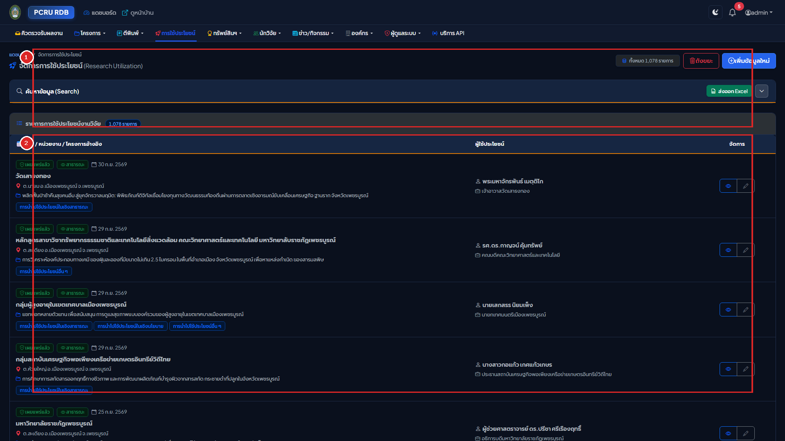
คำอธิบายส่วนประกอบตามหมายเลขในภาพ:
- หมายเลข
[1]แผงค้นหาและตัวกรองการใช้ประโยชน์หลังบ้าน (Utilize Filter Bar):- ช่องค้นหาชื่อโครงการและหน่วยงาน: พิมพ์ชื่อผลงาน หรือชื่อองค์กรผู้รับการถ่ายทอดเทคโนโลยี
- ตัวกรองมิติ 4 ด้าน: เชิงพาณิชย์, เชิงนโยบาย, เชิงชุมชนและสังคม, หรือเชิงวิชาการ
- ปุ่มเพิ่มข้อมูลใหม่: คลิกปุ่มสีเขียว "+ เพิ่มการนำไปใช้ประโยชน์ใหม่"
- หมายเลข
[2]ตารางจัดการข้อมูลการใช้ประโยชน์และพิกัดพื้นที่ (Utilize Records Table & Actions):- ชื่อโครงการวิจัยต้นทาง: ลิงก์เชื่อมโยงไปยังโครงการวิจัยที่เป็นฐานความรู้
- พิกัดพื้นที่ภูมิศาสตร์: แสดงข้อมูล จังหวัด, อำเภอ และตำบล ที่เกิดการนำผลงานไปประยุกต์ใช้จริง
- หลักฐานรับรองผลกระทบ: ตรวจสอบไฟล์หนังสือรับรองการใช้ประโยชน์ที่ลงนามโดยหน่วยงานภายนอก
บทที่ 7: การบริหารข้อมูลพื้นฐานของระบบ (Master Data Management: 17 โมดูล)
7.1 ภาพรวมโมดูลข้อมูลหลัก 17 รายการ
ระบบฐานข้อมูลงานวิจัยมีตารางข้อมูลพื้นฐาน (Master Data) ทั้งหมด 17 โมดูล เพื่อควบคุมมาตรฐานข้อมูลทั้งระบบ:
┌────────────────────────────────────────────────────────────────────────────────────────┐
│ ตารางข้อมูลพื้นฐานระบบ (Master Data 17 โมดูล) │
├──────────────────────────┬──────────────────────────┬──────────────────────────────────┤
│ 1. ปีงบประมาณ (rdbyear) │ 2. คณะ (rdbdepartment) │ 3. ประเภทคณะ (departmenttype) │
│ 4. สาขาวิชา (depmajor) │ 5. หมวดสาขา (depcat) │ 6. สาขาเฉพาะ (rdbbranch) │
│ 7. ประเภททุน (projtype) │ 8. กลุ่มทุน (projtypegrp)│ 9. ทุนย่อย (projtypesub) │
│ 10. ยุทธศาสตร์ (strategic)│ 11. กลุ่มงาน (groupproj) │ 12. ตำแหน่งโครงการ (projposition)│
│ 13. ลักษณะงาน (projwork) │ 14. คำนำหน้าชื่อ (prefix)│ 15. ประเภท DIP (rdbdiptype) │
│ 16. ประเภทตีพิมพ์ (pubtype)│ 17. ประเภทใช้ประโยชน์ (utilizetype) │
└──────────────────────────┴──────────────────────────┴──────────────────────────────────┘
7.2 ขั้นตอนการบริหารจัดการ Master Data แต่ละตาราง
ทุกโมดูลในระบบ Master Data มีฟังก์ชันการทำงานมาตรฐาน 4 รูปแบบ:
- การค้นหาและกรองข้อมูล: มีกล่องค้นหาแบบพับเก็บได้ (
<x-search-bar>) ด้านบนทุกหน้า - การเพิ่มรายการใหม่: คลิกปุ่มสีเขียว "+ เพิ่มรายการใหม่" กรอกชื่อภาษาไทย, ภาษาอังกฤษ และรหัสอ้างอิง
- การแก้ไขรายการ: คลิกปุ่มสีเหลืองรูปดินสอในแถวที่ต้องการแก้ไข ปรับปรุงข้อความ แล้วกดบันทึก
- การลบและการป้องกันข้อมูลผูกพัน: ระบบมีกลไก Foreign Key Protection หากข้อมูลรายการนั้นถูกนำไปผูกโยงกับโครงการวิจัยหรือบทความตีพิมพ์แล้ว ระบบจะปฏิเสธการลบ เพื่อป้องกันข้อมูลเสียหาย
บทที่ 8: การบริหารข้อมูลนักวิจัยและการเชื่อมโยงฐานข้อมูลสากล (Scopus & ORCID)
8.1 การตรวจสอบความถูกต้องของรหัสบัตรประชาชน 13 หลัก (Modulo 11 Algorithm)
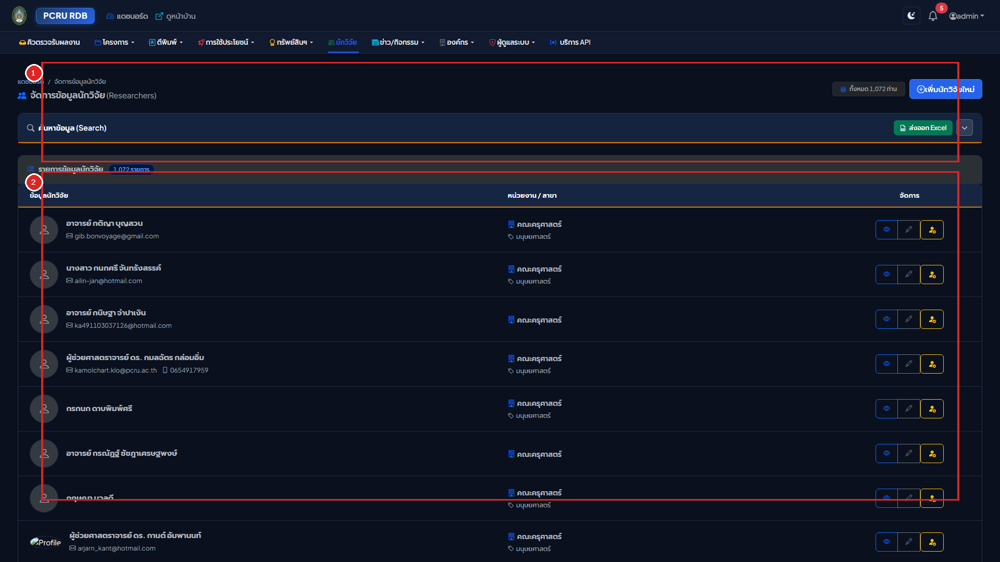
คำอธิบายส่วนประกอบตามหมายเลขในภาพ:
- หมายเลข
[1]แผงค้นหาและตัวกรองคณะ/สังกัดนักวิจัยหลังบ้าน (Researcher Filter Bar):- ช่องค้นหาชื่อนักวิจัย: พิมพ์ชื่อหรือนามสกุล (ระบบตัดคำนำหน้า ศ./รศ./ผศ./ดร./นาย/นาง อัตโนมัติ)
- ตัวกรองคณะและสถานะข้อมูล: กรองดูเฉพาะคณะที่ต้องการ หรือกรองเฉพาะผู้ที่มีรหัสบัตรประชาชนถูกต้อง
- ปุ่มเพิ่มนักวิจัยใหม่: คลิกปุ่มสีเขียว "+ เพิ่มนักวิจัยใหม่"
- หมายเลข
[2]ตารางทำเนียบนักวิจัย การตรวจสอบบัตรประชาชน และการซิงก์ Scopus (Researchers Table):- ข้อมูลนักวิจัย: รูปถ่าย, ชื่อ-นามสกุล, ตำแหน่งทางวิชาการ, คุณวุฒิ และสังกัดภาควิชา/คณะ
- สถานะความถูกต้องของเลขบัตรประชาชน 13 หลัก: แสดงไอคอนสีเขียวเมื่อผ่านอัลกอริทึม Modulo 11
- การซิงก์ดัชนีทางวิชาการ (Scopus / ORCID): แสดงค่า h-index, จำนวนเอกสารสะสม และปุ่มซิงก์ข้อมูล API
- ปุ่มจำลองสิทธิ์และแก้ไข: ผู้ดูแลระบบสามารถคลิกปุ่มสีเหลืองเพื่อจำลองสิทธิ์ หรือคลิกแก้ไขข้อมูลประวัติ
flowchart LR
ID["1. กรอกเลขบัตรประชาชน 13 หลัก"] --> Modulo["2. อัลกอริทึม Modulo 11 ตรวจสอบความถูกต้อง"]
Modulo -->|ผ่านเกณฑ์| Valid["แสดงเครื่องหมายถูกต้องสีเขียว ผ่านมาตรฐาน สกสว./วช."]
Modulo -->|ไม่ผ่าน| Invalid["แสดงกรอบสีแดง แจ้งเตือนเลขบัตรไม่ถูกต้อง ป้องกันข้อมูลผิดพลาด"]
ScopusInput["3. ระบุ Scopus Author ID / ORCID"] --> API["4. ระบบเชื่อมต่อ Scopus Author API อัตโนมัติ"]
API --> Sync["5. ดึงค่า h-index, จำนวนเอกสาร, และยอด Citations มาอัปเดตลงฐานข้อมูล"]
เพื่อป้องกันความผิดพลาดในการรายงานข้อมูลต่อ สกสว. และ วช. ระบบได้ติดตั้งอัลกอริทึมตรวจสอบเลขบัตรประจำตัวประชาชน 13 หลัก ตามมาตรฐานกรมการปกครอง: $$\sum_{i=1}^{12} (d_i \times (14 - i)) \pmod{11}$$ หากผู้ใช้กรอกเลขบัตรประชาชนผิดหลักหรือหลักตรวจสอบไม่ถูกต้อง ระบบจะแสดงกรอบสีแดงแจ้งเตือนทันที
8.2 การซิงก์ดัชนีทางวิชาการ Scopus Author ID และ h-index
- ผู้ดูแลระบบสามารถระบุ Scopus Author ID ของนักวิจัย
- ระบบเชื่อมโยงผ่าน Elsevier Scopus Author Retrieval API เพื่อดึงค่า h-index, จำนวนเอกสารตีพิมพ์สะสม (Documents), และจำนวนการอ้างอิงสะสม (Citations) มาบันทึกในฐานข้อมูลอัตโนมัติ
8.3 การตรวจสอบและเชื่อมโยงรหัสสากล ORCID iD
- ระบุรหัส ORCID ในรูปแบบสากล 16 หลัก (
0000-0002-1825-0097) - ระบบมี Regular Expression ตรวจสอบรูปแบบ เพื่อให้ลิงก์ไปยังหน้าโปรไฟล์ ORCID ได้อย่างถูกต้อง
บทที่ 9: การส่งออกรายงาน UTF-8 BOM Excel และคลังปัญญา DSpace SAF
9.1 การสตรีมไฟล์ CSV ขนาดใหญ่พร้อมฝังรหัส UTF-8 BOM
ในทุกหน้ารายการ ผู้ใช้สามารถคลิกปุ่ม "Export CSV" เพื่อดาวน์โหลดรายงาน:
- UTF-8 BOM Header (
\xEF\xBB\xBF): ระบบฝังรหัส Byte Order Mark ลงในส่วนหัวของไฟล์ ทำให้โปรแกรม Microsoft Excel บนระบบปฏิบัติการ Windows และ Mac เปิดไฟล์อ่านภาษาไทยได้ถูกต้อง 100% โดยไม่มีปัญหาตัวอักษรต่างดาว - CSV Formula Injection Prevention: ระบบทำการตรวจสอบและล้างอักขระเสี่ยง (
=,+,-,@) ในฟิลด์ข้อความ เพื่อป้องกันการฝังคำสั่งอันตรายในสเปรดชีต
9.2 การส่งออกแพ็กเกจคลังปัญญา DSpace SAF แบบกลุ่ม (Batch Mode)
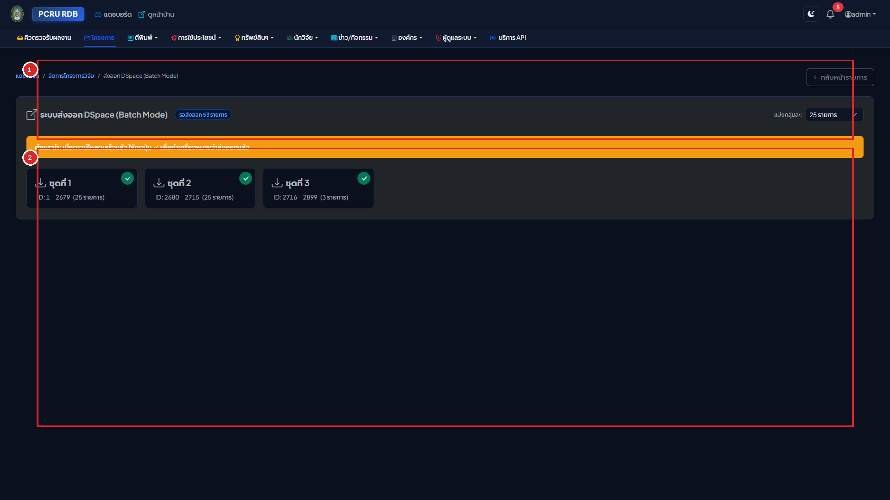
สำหรับส่งออกข้อมูลเข้าสู่ระบบคลังปัญญาสถาบัน (Institutional Repository - DSpace):
- เข้าเมนู "ส่งออก DSpace (Batch Mode)" ในโครงการวิจัยหรือผลงานตีพิมพ์
- เลือกรอบชุดข้อมูล (เช่น Batch ละ 20 รายการ)
- คลิกปุ่ม "ดาวน์โหลดแพ็กเกจ ZIP" ➔ ระบบจะสร้างไฟล์
.zipตามมาตรฐาน DSpace Simple Archive Format (SAF) ประกอบด้วย:dublin_core.xml: ข้อมูลเมทาดาทาครบถ้วนตามมาตรฐาน Dublin Core (พร้อมระบุจำนวนหน้าเอกสารในแท็กdc.format.extent)contents: รายการระบุชื่อไฟล์แนบ- ไฟล์ PDF เล่มรายงานหรือบทความฉบับเต็ม
9.3 เครื่องมือตรวจสอบความสมบูรณ์ของไฟล์ PDF ก่อนส่งออก (DSpace Check Mode)
- เข้าที่เมนู "ตรวจสอบจำนวนหน้า & สถานะ DSpace" (
/backend/rdb_published/dspace_check) - เครื่องมือจะตรวจสอบความพร้อมของไฟล์ PDF, จำนวนหน้า, และสถานะการเปิดเผย เพื่อยืนยันความสมบูรณ์ก่อนสร้างแพ็กเกจส่งออก DSpace
9.4 คำสั่งดูแลรักษาระบบผ่าน Artisan CLI
ผู้ดูแลระบบเซิร์ฟเวอร์สามารถรันคำสั่งบำรุงรักษาผ่าน Terminal ได้ตลอดเวลา:
# 1. รันระบบตรวจนับจำนวนหน้า PDF ย้อนหลังทั้งระบบ
php artisan rdb:count-pdf-pages --module=all
# 2. รันระบบสกัดภาพปกหน้าแรก .webp ย้อนหลังทั้งระบบ
php artisan rdb:generate-pdf-covers --module=all
บทที่ 10: ประวัติการใช้งาน (Audit Logs) และการตั้งค่านโยบายความปลอดภัย
10.1 การตรวจสอบประวัติการทำรายการ (Audit Trail) และเครื่องมือเปรียบเทียบค่าเดิม-ใหม่ (Diff Viewer)
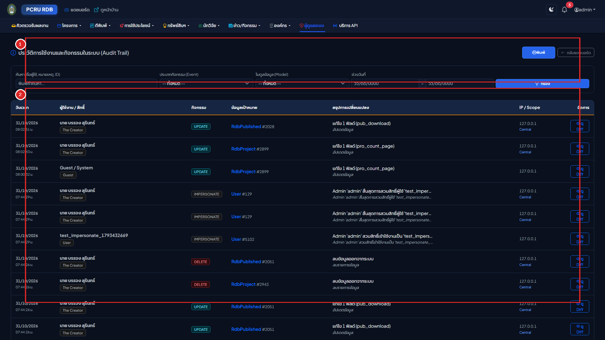
- เข้าเมนู "ประวัติการใช้งาน (Audit Trail)" (
/backend/audit-logs) - กรองดูประวัติตามชื่อผู้ใช้งาน, ประเภทเหตุการณ์ (
created,updated,deleted,submit,approve,reject), หรือโมดูลข้อมูล - คลิกปุ่ม "ดูรายละเอียดการเปลี่ยนแปลง (Diff Viewer)" เพื่อเปิดดูตารางเปรียบเทียบ:
- ค่าข้อมูลเดิม (Old Values): แสดงข้อความเดิมก่อนการแก้ไข
- ค่าข้อมูลใหม่ (New Values): แสดงข้อความใหม่ที่มีการเปลี่ยนแปลง (พร้อมเน้นสี)
- แสดงหมายเลข IP Address, ชนิดเบราว์เซอร์ และเวลาที่บันทึกข้อมูลอย่างละเอียด
10.2 การตั้งค่านโยบายความปลอดภัยการดาวน์โหลดเอกสาร (Document Access Policy)
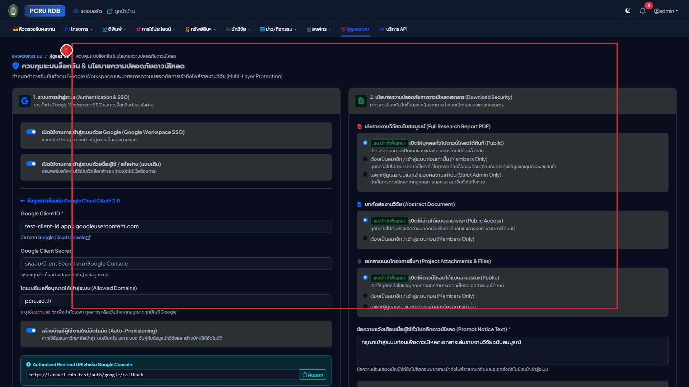
- เข้าเมนู "ตั้งค่าการควบคุมการเข้าถึง" (
/backend/settings/access-control) - ผู้ดูแลระบบสามารถกำหนดนโยบายการดาวน์โหลดเอกสารระดับมหาวิทยาลัย:
- สาธารณะ (Public Access - แนะนำ): ประชาชนทั่วไปสามารถดาวน์โหลดไฟล์เล่มรายงานและบทความที่ตั้งค่าเปิดเผยได้โดยไม่ต้องเข้าสู่ระบบ
- ต้องเข้าสู่ระบบก่อนดาวน์โหลด (Authenticated Users Only): บังคับให้ผู้ใช้งานต้องล็อกอินก่อน จึงจะสามารถดาวน์โหลดไฟล์เอกสารฉบับเต็มได้
- คลิกปุ่ม "บันทึกการตั้งค่า" นโยบายจะมีผลบังคับใช้ทั่วทั้งระบบทันที
10.3 การตรวจสอบประวัติกิจกรรมและการแก้ไขรายรายการ (Record-Level Audit Trail)
ระบบได้ติดตั้งการ์ดประวัติกิจกรรมและการแก้ไขงาน (<x-audit-trail>) ฝังไว้ที่ส่วนล่างของหน้ารายละเอียด (show.blade.php) ในทุกโมดูลหลักของระบบหลังบ้าน ได้แก่:
- ผลงานวิชาการ: โครงการวิจัย (
/backend/rdb_project/{id}), ผลงานตีพิมพ์ (/backend/rdb_published/{id}), ทรัพย์สินทางปัญญา (/backend/rdb_dip/{id}), การนำผลงานไปใช้ประโยชน์ (/backend/rdb_projectutilize/{id}) - บัญชีและข้อมูลบุคลากร: บัญชีผู้ใช้งาน (
/backend/user/{id}), ข้อมูลประวัตินักวิจัย (/backend/rdb_researcher/{id}) - โมดูลย่อยวิชาการ: ข่าวสารประชาสัมพันธ์/ทุนวิจัย (
/backend/research_news/{id}), งานประชุมวิชาการ (/backend/research_conference/{id})
สิทธิ์ในการเข้าถึงและมาตรการความปลอดภัย
- ผู้ดูแลระบบส่วนกลาง (The Creator / Admin / Admin Research): สามารถตรวจสอบประวัติกิจกรรมของทุกรายการ พร้อมดูข้อมูลเชิงเทคนิค เช่น IP Address, User Agent และ URL Endpoint เพื่อความปลอดภัย
- นักวิจัยเจ้าของผลงาน (Owner / Co-researcher): สามารถเข้าดูประวัติกิจกรรมและการแก้ไขเฉพาะผลงานของตนเอง และประวัติบัญชีผู้ใช้ของตนเองได้ โดยระบบจะซ่อนข้อมูลเชิงเทคนิค (IP / User Agent) เพื่อความปลอดภัยและความเป็นส่วนตัว
- ผู้ใช้งานอื่นที่ไม่เกี่ยวข้อง: ถูกปฏิเสธการเข้าถึง (403 Forbidden) ไม่สามารถส่องดูประวัติผลงานหรือบัญชีของผู้อื่นได้
- ระบบหน้าบ้าน (Public Portal): ปิดกั้นการมองเห็นและไม่ส่งข้อมูล Audit Log ออกสู่หน้าบ้าน 100%
ฟังก์ชันการใช้งาน
- ไทม์ไลน์กิจกรรม (Editorial Timeline): แสดงลำดับเหตุการณ์จากล่าสุด วันที่และเวลา พ.ศ. พร้อมระยะเวลาสัมพัทธ์ (เช่น "2 ชั่วโมงที่แล้ว")
- ป้ายประเภทกิจกรรม: แยกสีชัดเจน เช่น สร้างรายการใหม่ (สีเขียว), อัปเดตข้อมูล (สีน้ำเงิน), ปรับเปลี่ยนสถานะ (สีเหลือง), ลบข้อมูล (สีแดง)
- เครื่องมือตรวจสอบความเปลี่ยนแปลง (Field-by-Field Diff Viewer): คลิกปุ่ม "ดูรายละเอียดที่เปลี่ยน" เพื่อเปิดตารางเปรียบเทียบค่าเดิม (Old Value) และค่าใหม่ (New Value) แบบเรียลไทม์
- ระบบแบ่งหน้าอัจฉริยะ (Instant Client-Side Pagination): จัดกลุ่มประวัติกิจกรรมเป็นหน้าละ 10 รายการ อย่างเป็นระเบียบ พร้อมปุ่ม "ก่อนหน้า", "ถัดไป", และหมายเลขหน้า ช่วยลดความยาวของหน้าจอและโหลดข้อมูลได้ทันทีโดยไม่ต้อง Refresh หน้าเว็บ
- การบันทึกประวัติความสัมพันธ์ย่อย (Sub-Resource Audit Tracking):
- นักวิจัยร่วมโครงการ (
rdb_project_work): เมื่อมีการเพิ่ม แก้ไขสัดส่วน (%) หรือลบนักวิจัยร่วม ระบบจะบันทึกประวัติลงในการ์ดโครงการวิจัยนั้นทันที ระบุชื่อนักวิจัย ตำแหน่ง และสัดส่วนที่เปลี่ยนแปลง - ผู้เขียนผลงานตีพิมพ์ (
rdb_published_work): บันทึกการเพิ่ม/เปลี่ยนประเภทผู้แต่ง (เช่น ผู้ประพันธ์อันดับแรก, Corresponding Author) - ไฟล์แนบเพิ่มเติม (
rdb_project_files): บันทึกการอัปโหลดไฟล์ การแก้ไขชื่อไฟล์ หรือการลบไฟล์แนบ
- นักวิจัยร่วมโครงการ (
- นโยบายการคัดแยก Log ขยะ (Log Hygiene & Noise Reduction Policy):
- ระบบยกเว้นการบันทึกการนับสถิติการเข้าดู (View Counts) และการดาวน์โหลดไฟล์ (Download Counts) ออกจากตาราง Audit Log เพื่อป้องกันการสะสมของ Event ขยะนับแสนรายการ
- มุ่งเน้นการจัดเก็บเฉพาะกิจกรรมที่มีนัยสำคัญต่อความโปร่งใสและตรวจสอบได้ (Data Governance) ได้แก่ การสร้าง, การแก้ไขฟิลด์ข้อมูล, การเปลี่ยนสถานะโครงการ, การส่งประเมินเล่มรายงาน, การนำเข้าคลัง DSpace, และการจัดการผู้ร่วมวิจัย/ไฟล์แนบ
บทที่ 11: ศูนย์จัดการคำสั่งระบบและการบำรุงรักษา (System Commands & Maintenance Dashboard)
การจำกัดสิทธิ์ระดับสูง (Super Admin Only):
หน้านี้สงวนสิทธิ์เฉพาะผู้ดูแลระบบที่มีบทบาท The Creator, Admin, หรือ Admin Research เท่านั้น การสั่งรันคำสั่งจะส่งผลกระทบต่อแคชและไฟล์ภาพพรีวิวของระบบทั้งมหาวิทยาลัย ทุกการดำเนินการจะถูกบันทึกประวัติลงใน Audit Trail โดยอัตโนมัติ
11.1 ภาพรวมหน้าจอศูนย์คำสั่งระบบ (/backend/system-commands)
เข้าใช้งานผ่านเมนูแถบซ้าย: การดูแลระบบ ➔ คำสั่งและบำรุงรักษาระบบ หรือพิมพ์ URL: http://laravel_rdb.test/backend/system-commands
หน้าจอประกอบด้วย 5 ส่วนสำคัญ:
- แถบสถานะเอนจินและเซิร์ฟเวอร์ (System Health & Engine Strip): แสดงสถานะความพร้อมของเครื่องมือใน Laragon/เซิร์ฟเวอร์ ได้แก่ MuPDF (PyMuPDF), Poppler pdftotext/pdftoppm, PHP GD WebP, พื้นที่ว่างบนดิสก์, MariaDB Latency, คิวงานประมวลผล (Queue) และจำนวนงานใน Cron Scheduler
- แผงทางลัดเครื่องมือเชื่อมโยง (Quick Action Shortcuts): ปุ่มทางลัดเข้าสู่ระบบจัดการ API (API Management), เครื่องมือทดสอบดึงข่าว NRIIS (Dry-Run), เครื่องมือทดสอบดึงงานประชุม Facebook (Dry-Run), และระบบตั้งเวลาอัตโนมัติ (Scheduler)
- การ์ดสถิติความครอบคลุม (Coverage Analytics Strip — 3 คอลัมน์):
- โครงการวิจัย: ภาพหน้าปก PDF (.webp) และจำนวนหน้าที่ตรวจนับแล้ว
- ผลงานตีพิมพ์: ภาพหน้าปก PDF (.webp) และจำนวนหน้าที่ตรวจนับแล้ว
- ภาพระบบ WebP (≤1024px): สถิติ % ภาพที่แปลงเป็น
.webpแล้ว แยกตาม 3 โมดูล (รูปโปรไฟล์นักวิจัย, ภาพข่าวทุนวิจัย NRIIS, และภาพงานประชุมวิชาการ)
- กล่อง Terminal Output Log: แสดงผลลัพธ์คำสั่ง CLI แบบเรียลไทม์บนพื้นหลังสีดำ พร้อมปุ่มคัดลอก Log
- การ์ดสั่งรันคำสั่งระบบ (Interactive Command Runners — 5 หมวดการทำงาน): รันผ่านหน้าเว็บได้โดยตรงไม่ต้องเปิด Terminal
11.2 คำสั่งสร้างภาพหน้าแรก PDF (.webp) ทั้งระบบด้วย MuPDF & GD
- วัตถุประสงค์: เรนเดอร์หน้าแรกของไฟล์ PDF ฉบับเต็มทั้งหน้าออกมาเป็นภาพ
.webp(ความกว้างสูงสุด 800px คุณภาพ 85%) แทนการใช้ไฟล์ PDF ขนาดใหญ่ในการแสดงผล ช่วยให้หน้าเว็บโหลดเร็วขึ้น 10 เท่า - ขั้นตอนการรันผ่านหน้าเว็บ:
- เลือก โมดูล: ทั้งหมด (
all), โครงการวิจัย (project), หรือผลงานตีพิมพ์ (published) - เลือก จำนวนรายการ (Limit): เช่น ทดสอบ 10 รายการแรก หรือทั้งหมดในระบบ
- สวิตช์ บังคับสร้างใหม่ทับของเดิม (
--force): เปิดใช้เมื่อต้องการอัปเดตภาพหน้าปกทั้งหมดใหม่ - คลิกปุ่ม "รันคำสั่งสร้างภาพหน้าปก" ➔ ระบบจะเริ่มประมวลผลและแสดงรายงานสรุปจำนวนที่สำเร็จและล้มเหลว
- เลือก โมดูล: ทั้งหมด (
- คำสั่งเทียบเท่าผ่าน Terminal / Shell:
php artisan rdb:generate-pdf-covers --module=all --force
11.3 คำสั่งตรวจนับจำนวนหน้าไฟล์ PDF ย้อนหลัง (Page Count Engine)
- วัตถุประสงค์: สแกนจำนวนหน้าจริงของเล่มรายงานวิจัยและบทความตีพิมพ์ด้วยสถาปัตยกรรม 4-Tier Engine (Poppler pdftotext ➔ Smalot ➔ Fpdi ➔ Fast Regex) และบันทึกลงฟิลด์
pro_page_numและpub_numfile - ขั้นตอนการรันผ่านหน้าเว็บ:
- เลือกโมดูลและจำนวนรายการที่ต้องการนับ
- สวิตช์บังคับนับใหม่ (
--force): สแกนนับใหม่ทุกไฟล์แม้จะมีตัวเลขเดิมอยู่แล้ว - คลิกปุ่ม "รันคำสั่งนับจำนวนหน้า"
- คำสั่งเทียบเท่าผ่าน Terminal / Shell:
php artisan rdb:count-pdf-pages --module=all --force
11.4 คำสั่งแปลงรูปภาพทั้งระบบเป็น WebP (Universal WebP Image Converter)
- วัตถุประสงค์: แปลงรูปภาพทั้งหมดในระบบ (รูปโปรไฟล์นักวิจัย
rdb_researcher, ภาพข่าวทุนวิจัย NRIISresearch_news, ภาพงานประชุมวิชาการresearch_coferenceinthai) ให้เป็นฟอร์แมต.webpคุณภาพ 85 พร้อมปรับลดขนาดความกว้าง/สูงสูงสุดไม่เกิน 1,024 พิกเซลอัตโนมัติ (รักษา Aspect Ratio เดิม) ช่วยเพิ่มความเร็วโหลดหน้าเว็บและลดขนาดพื้นที่จัดเก็บลงกว่า 70-85% - ขั้นตอนการรันผ่านหน้าเว็บ (
/backend/system-commands):- เลือก โมดูลรูปภาพ: ทั้งหมด (
all), เฉพาะรูปโปรไฟล์นักวิจัย (researcher), เฉพาะข่าวทุนวิจัย (news), หรือเฉพาะงานประชุมวิชาการ (conference) - เลือก จำนวนรายการ (Limit): 10, 50, 100 รายการ หรือทั้งหมดในระบบ (Full System)
- กำหนด ขนาดภาพสูงสุด (Max Dimension): ค่ามาตรฐานแนะนำ
1024พิกเซล (px) - สวิตช์ บังคับแปลงใหม่ทับของเดิม (
--force): สำหรับสั่งประมวลผลซ้ำทุกภาพแม้เป็น.webpอยู่แล้ว - คลิกปุ่ม "รันคำสั่งแปลงรูปภาพ WebP" ➔ ผลลัพธ์และสถิติจะแสดงลงในกล่อง Terminal Output ด้านบนทันที
- เลือก โมดูลรูปภาพ: ทั้งหมด (
- คำสั่งเทียบเท่าผ่าน Terminal / Shell:
php artisan rdb:convert-images-webp --module=all --force --max-dimension=1024
11.5 คำสั่งล้างแคชและรีเซ็ตระบบ (Clear Application, Route, View, Config Cache)
- วัตถุประสงค์: ล้างแคชการประมวลผลสถิติ, แคชเส้นทาง URL, แคชหน้าจอ Blade Template, และแคชการตั้งค่า เพื่อให้ระบบแสดงผลข้อมูลและโครงสร้างล่าสุดทันที
- ขั้นตอนการรันผ่านหน้าเว็บ:
- คลิกปุ่ม "ล้างแคชระบบทันที" (
<button class="btn btn-warning">) - ยืนยันในกล่องข้อความ Alert
- ระบบจะสั่งรันคำสั่ง 4 ชุดพร้อมกัน:
php artisan cache:clear(ล้างแคชดาต้าเบสและสถิติ)php artisan view:clear(ล้างแคชคอมไพล์ Blade Views)php artisan route:clear(ล้างแคช Route)php artisan config:clear(ล้างแคช Environment)
- คลิกปุ่ม "ล้างแคชระบบทันที" (
11.6 การตรวจสอบความพร้อมของเซิร์ฟเวอร์และเอนจิน (Server Engine Health Check)
ตารางความต้องการเครื่องมือของระบบ (SysAdmin Requirements):
| เครื่องมือ / ส่วนประกอบ | หน้าที่ในระบบ | สถานะที่ต้องการ | การติดตั้งบน Ubuntu Production |
|---|---|---|---|
MuPDF (fitz) / PyMuPDF |
เรนเดอร์หน้าแรกของ PDF ทั้งหน้าเป็นภาพ WebP | แนะนำสูงสุด (Tier 2) | pip install pymupdf Pillow |
| Poppler pdftotext | นับจำนวนหน้า PDF แม่นยำ 99.99% | แนะนำสูงสุด (Tier 1) | sudo apt install poppler-utils |
| Poppler pdftoppm | สกัดภาพหน้าแรก PDF ความเร็วสูง | แนะนำ (Tier 1) | sudo apt install poppler-utils |
| PHP GD Extension | วาดปกสำรองภาษาไทย & ประมวลผลภาพ WebP | จำเป็น (Mandatory) | sudo apt install php8.x-gd |
| ฟอนต์ Leelawadee UI / Sarabun | ฟอนต์ TrueType สำหรับเรนเดอร์ภาษาไทย | จำเป็นบน GD | sudo apt install fonts-thai-tlwg |
| Storage Symlink | เชื่อมต่อ URL สาธารณะกับพื้นที่จัดเก็บ | จำเป็น (Mandatory) | php artisan storage:link |
11.7 คู่มือขั้นตอนการติดตั้งเอนจินประมวลผล PDF และฟอนต์ภาษาไทย (SysAdmin Engine Installation Guide)
กรณีที่ระบบแสดงสถานะว่าเครื่องมือใดเครื่องมือหนึ่งยังไม่พร้อมใช้งาน ผู้ดูแลระบบสามารถติดตั้งและกำหนดค่าได้ตามขั้นตอนดังนี้:
1. การติดตั้ง MuPDF (PyMuPDF - Python fitz + Pillow)
- บน Windows / Laragon:
- ตรวจสอบเวอร์ชันของ Python ในเครื่อง:
python --version(แนะนำ Python 3.9 ขึ้นไป) หากยังไม่มีให้ติดตั้งจาก python.org โดยติ๊กเลือก "Add python.exe to PATH" - รันคำสั่งติดตั้งผ่าน Terminal:
pip install --upgrade pymupdf pillow - หากระบบตรวจไม่พบ ให้กำหนดพาธตรงในไฟล์
.env:PYTHON_PATH="C:\Users\YourUser\AppData\Local\Programs\Python\Python312\python.exe"
- ตรวจสอบเวอร์ชันของ Python ในเครื่อง:
- บน Linux (Ubuntu / Debian Production):
sudo apt update && sudo apt install -y python3 python3-pip pip3 install --upgrade pymupdf pillow - บน Linux (CentOS / RHEL / AlmaLinux):
sudo dnf install -y python3 python3-pip pip3 install --upgrade pymupdf pillow
2. การติดตั้ง Poppler CLI (pdftotext & pdftoppm)
- บน Windows / Laragon:
- วิธีที่ 1 (ตรวจพบอัตโนมัติผ่าน Git): หากติดตั้ง Git for Windows ใน Laragon ไบนารี
pdftotext.exeจะอยู่ที่laragon\bin\git\mingw64\bin\pdftotext.exeซึ่งระบบตรวจจับให้อัตโนมัติ - วิธีที่ 2 (ติดตั้ง Poppler Windows แยก): ดาวน์โหลดแพ็กเกจ Binary จาก poppler-windows releases แตกไฟล์ไว้ที่
C:\laragon\bin\poppler\binแล้วระบุใน.env:PDFTOTEXT_PATH="C:/laragon/bin/poppler/bin/pdftotext.exe" PDFTOPPM_PATH="C:/laragon/bin/poppler/bin/pdftoppm.exe"
- วิธีที่ 1 (ตรวจพบอัตโนมัติผ่าน Git): หากติดตั้ง Git for Windows ใน Laragon ไบนารี
- บน Linux (Ubuntu / Debian Production):
sudo apt update && sudo apt install -y poppler-utils - บน Linux (CentOS / RHEL / AlmaLinux):
sudo dnf install -y poppler-utils
3. การเปิดใช้งาน PHP GD Extension & FreeType
- บน Windows / Laragon:
- คลิกขวาที่หน้าต่าง Laragon ➔ เลือกเมนู PHP ➔ Extensions ➔ ติ๊กเลือก
gd - หรือเปิดไฟล์
php.iniลบเครื่องหมาย;หน้า;extension=gdเป็นextension=gd - กดปุ่ม Stop และกด Start All เพื่อรีสตาร์ท Apache
- คลิกขวาที่หน้าต่าง Laragon ➔ เลือกเมนู PHP ➔ Extensions ➔ ติ๊กเลือก
- บน Linux (Ubuntu / Debian Production):
sudo apt update && sudo apt install -y php8.2-gd sudo systemctl restart apache2 # หรือ sudo systemctl restart php8.2-fpm - บน Linux (CentOS / RHEL / AlmaLinux):
sudo dnf install -y php-gd sudo systemctl restart httpd # หรือ sudo systemctl restart php-fpm
4. การติดตั้งฟอนต์ภาษาไทยสำหรับสร้างภาพหน้าปกสำรอง (TrueType Fonts)
- Windows: ระบบดึงฟอนต์ระบบภาษาไทย
C:/Windows/Fonts/leelawb.ttf(Leelawadee UI Bold) อัตโนมัติ - Linux Server: ให้ติดตั้งแพ็กเกจฟอนต์ภาษาไทยของระบบ:
หรือคัดลอกไฟล์ฟอนต์ TrueType เช่นsudo apt install -y fonts-thai-tlwg fonts-noto-cjkSarabun-Bold.ttfไปวางไว้ในโฟลเดอร์storage/fonts/ภายในโปรเจกต์ Laravel
5. คำสั่งทดสอบความพร้อมของเอนจินทั้งหมดผ่าน Shell
# 1. ทดสอบ PyMuPDF (MuPDF Python)
python -c "import fitz, PIL; print('PyMuPDF Ready')"
# 2. ทดสอบ Poppler pdftotext
pdftotext -v
# 3. ทดสอบ PHP GD Extension และการรองรับ WebP
php -r "echo extension_loaded('gd') && function_exists('imagewebp') ? 'GD WebP OK' : 'GD Missing';"
11.8 ศูนย์สำรองและกู้คืนข้อมูลระบบ (Dedicated System Backup & Disaster Recovery Hub)
การสงวนสิทธิ์ขั้นเด็ดขาด (The Creator Only):
ฟังก์ชันการสำรอง กู้คืน และดาวน์โหลดไฟล์สำรองฐานข้อมูลระบบ สงวนสิทธิ์เฉพาะผู้ใช้บทบาท The Creator (ผู้ดูแลระบบสูงสุด) เพียงผู้เดียวเท่านั้น โดยระบบได้แยกออกเป็นเมนูเฉพาะที่ การดูแลระบบ ➔ สำรองและกู้คืนระบบ (Disaster Recovery) หรือ URL: http://laravel_rdb.test/backend/system-backup ระบบจะทำการปฏิเสธการเข้าถึง (HTTP 403 Forbidden) โดยอัตโนมัติหากเป็นผู้ใช้บทบาทอื่น
1. รูปแบบการสำรองข้อมูล 3 ระดับ
- สำรองเฉพาะฐานข้อมูล (Database Only:
.sql.gz): ส่งออกข้อมูลทั้งหมดของ MariaDB พร้อมบีบอัด Gzip ระดับ 9 (ลดขนาดลง ~80%) ใช้เวลาประมวลผล ~5–10 วินาที - สำรองเฉพาะไฟล์ Storage (
.zip): รวบรวมไฟล์เล่มรายงาน PDF, ปก WebP, ภาพนักวิจัย และไฟล์แนบทั้งหมดในstorage/app/public/ - สำรองข้อมูลทั้งระบบ (Full System Archive:
.zip): รวมไฟล์ฐานข้อมูล SQL.gz + ไฟล์ Storage + ไฟล์การตั้งค่า.envและ Manifest สรุประบบไว้ในแพ็กเกจเดียว
2. ขั้นตอนการกู้คืนระบบแบบปลอดภัยสูงสุด (Safe Web Restore with Email OTP)
เพื่อป้องกันข้อผิดพลาดจากการเขียนทับฐานข้อมูลจริง ระบบบังคับใช้กระบวนการยืนยัน 4 ชั้น:
- คลิกปุ่ม "กู้คืน (Restore)" ที่ไฟล์สำรองเป้าหมายในตาราง
- คลิกปุ่ม "กดส่งรหัส OTP ไปยังอีเมลของฉัน" ➔ ระบบจะสร้างรหัสความปลอดภัย OTP 6 หลัก และส่งเข้าอีเมลของ The Creator ทันที (อายุ 10 นาที)
- กรอกรหัส OTP 6 หลัก พร้อมพิมพ์ข้อความยืนยัน:
CONFIRM RESTORE - เมื่อกดยืนยัน:
- ระบบจะสร้าง Safety Snapshot สำรองฐานข้อมูลปัจจุบันไว้ให้อัตโนมัติก่อนเริ่มกู้คืนเสมอ (ชื่อไฟล์
backup_pre_restore_safety_snapshot_*.sql.gz) - ระบบทำการคลายบีบอัดและกู้คืนข้อมูลเข้า MariaDB
- ระบบทำการล้างแคชระบบอัตโนมัติ (
cache:clear,route:clear,view:clear)
- ระบบจะสร้าง Safety Snapshot สำรองฐานข้อมูลปัจจุบันไว้ให้อัตโนมัติก่อนเริ่มกู้คืนเสมอ (ชื่อไฟล์
3. คำสั่งผ่าน Terminal / Shell (Artisan CLI & Cron Schedule)
# สำรองเฉพาะฐานข้อมูล
php artisan rdb:backup --type=db
# สำรองเฉพาะไฟล์เอกสาร
php artisan rdb:backup --type=files
# สำรองทั้งระบบ พร้อมลบไฟล์สำรองเก่ากว่า 30 วันอัตโนมัติ
php artisan rdb:backup --type=all --clean-older-than-days=30
# คำสั่งกู้คืนฉุกเฉินผ่าน Shell
php artisan rdb:restore backup_db_20261103_151323.sql.gz --force
4. การเชื่อมต่อสำรองข้อมูลขึ้น Google Drive อัตโนมัติด้วย Rclone
แนะนำให้ตั้งเวลาซิงค์โฟลเดอร์สำรองไปยัง Google Drive อัตโนมัติผ่าน Rclone:
# 1. เชื่อมต่อ Google Drive (ฟรี ไม่จำกัดอายุ Token)
rclone config
# 2. คำสั่งซิงค์ขึ้น Google Drive
rclone sync storage/app/backups/ gdrive:PCRU_Research_Backups/ -v
11.9 การตั้งค่าระบบการส่งอีเมลของมหาวิทยาลัย (Mail & SMTP Configuration)
ความสำคัญของระบบ Mail ในระบบฐานข้อมูลงานวิจัย:
- ความปลอดภัย: จัดส่งรหัสความปลอดภัย OTP 6 หลักสำหรับยืนยันการกู้คืนฐานข้อมูล (Restore Verification) ไปยังอีเมลของ The Creator
- วงจรงานวิจัย (Workflow Notifications): แจ้งเตือนนักวิจัยเมื่อโครงการวิจัยหรือผลงานตีพิมพ์ได้รับการอนุมัติ หรือมีข้อเสนอแนะให้แก้ไข
- ระบบผู้ทรงคุณวุฒิ (Peer Review): แจ้งเตือนผู้ทรงคุณวุฒิเมื่อได้รับมอบหมายให้เข้าตรวจประเมินเล่มรายงานวิจัยฉบับสมบูรณ์
1. ตำแหน่งไฟล์การตั้งค่า
การตั้งค่าระบบ Mail ของ Laravel ทั้งหมดจะถูกเก็บไว้ที่ ไฟล์ .env บริเวณโฟลเดอร์หลักของโปรเจกต์ (/laravel_rdb/.env) โดยสามารถเปิดแก้ไขด้วย Text Editor หรือ VS Code
2. ตารางพารามิเตอร์การตั้งค่าในไฟล์ .env
ตัวแปรใน .env |
หน้าที่และความหมาย | ค่าตัวอย่างที่แนะนำ |
|---|---|---|
MAIL_MAILER |
ไดรเวอร์การส่งอีเมล | smtp (ใช้งานจริง) หรือ log (ทดสอบในเครื่อง) |
MAIL_HOST |
ที่อยู่โฮสต์ของ Mail Server | smtp.gmail.com หรือ mail.pcru.ac.th |
MAIL_PORT |
พอร์ตเชื่อมต่อ SMTP | 587 (TLS), 465 (SSL) หรือ 25 (Internal) |
MAIL_USERNAME |
บัญชีผู้ใช้อีเมลผู้ส่ง | research_admin@pcru.ac.th |
MAIL_PASSWORD |
รหัสผ่าน หรือ App Password 16 หลัก | รหัสผ่านแอปที่สร้างจาก Google Account |
MAIL_ENCRYPTION |
โปรโตคอลเข้ารหัสความปลอดภัย | tls หรือ ssl |
MAIL_FROM_ADDRESS |
ที่อยู่อีเมลที่จะแสดงในช่องผู้ส่ง | research@pcru.ac.th |
MAIL_FROM_NAME |
ชื่อหน่วยงานที่จะแสดงเป็นผู้ส่ง | สถาบันวิจัยและพัฒนา มรภ.เพชรบูรณ์ |
3. รูปแบบการตั้งค่าตามสภาวะแวดล้อม (Configuration Presets)
แบบที่ 1: การใช้ Google Workspace / Gmail ของมหาวิทยาลัย (@pcru.ac.th)
เป็นแนวทางที่แนะนำสูงสุดสำหรับความเสถียรและอีเมลไม่ตกไปอยู่ในโฟลเดอร์ขยะ (Spam):
- เข้าสู่ระบบบัญชี Google ของมหาวิทยาลัย ➔ ไปที่ จัดการบัญชี Google (Google Account) ➔ เมนู ความปลอดภัย (Security)
- เปิดใช้งาน การยืนยันแบบ 2 ขั้นตอน (2-Step Verification)
- ค้นหาเมนู รหัสผ่านสำหรับแอป (App Passwords) ➔ ตั้งชื่อแอป เช่น
PCRU-RDB-System➔ คลิก สร้าง (Create) - ระบบจะแสดงรหัสผ่าน 16 ตัวอักษร (เช่น
abcd efgh ijkl mnop) นำมากรอกลงในไฟล์.env:
MAIL_MAILER=smtp
MAIL_HOST=smtp.gmail.com
MAIL_PORT=587
MAIL_USERNAME=research_admin@pcru.ac.th
MAIL_PASSWORD=abcdefghijklmnop
MAIL_ENCRYPTION=tls
MAIL_FROM_ADDRESS="research_admin@pcru.ac.th"
MAIL_FROM_NAME="สถาบันวิจัยและพัฒนา มรภ.เพชรบูรณ์"
แบบที่ 2: การใช้ Mail Gateway / SMTP ภายในมหาวิทยาลัย
กรณีใช้ Mail Server ภายในเครือข่ายของมหาวิทยาลัยราชภัฏเพชรบูรณ์:
MAIL_MAILER=smtp
MAIL_HOST=mail.pcru.ac.th
MAIL_PORT=25
MAIL_USERNAME=your_username
MAIL_PASSWORD=your_password
MAIL_ENCRYPTION=tls
MAIL_FROM_ADDRESS="no-reply@pcru.ac.th"
MAIL_FROM_NAME="PCRU Research Database"
แบบที่ 3: โหมดพัฒนาและทดสอบบนเครื่อง Local (Local Log Mode)
กรณีที่ยังไม่มีการต่ออินเทอร์เน็ตหรือต้องการทดสอบโดยไม่ส่งอีเมลออกจริง:
MAIL_MAILER=log
- ในโหมดนี้ เนื้อหาอีเมลทั้งหมดรวมถึงรหัส OTP 6 หลัก จะถูกบันทึกลงในไฟล์
storage/logs/laravel.logโดยอัตโนมัติ
4. ขั้นตอนการล้างแคชหลังแก้ไขไฟล์ .env
ทุกครั้งที่มีการแก้ไขค่าตัวแปรในไฟล์ .env ผู้ดูแลระบบต้องรันคำสั่งล้างแคชการตั้งค่า เพื่อให้ระบบอ่านค่าใหม่ทันที:
php artisan config:clear
5. คำสั่งทดสอบการส่งอีเมลจริงผ่าน Terminal
สามารถทดสอบส่งอีเมล 1 ฉบับผ่านคำสั่ง Artisan Tinker เพื่อตรวจสอบว่าเชื่อมต่อสำเร็จหรือไม่:
php artisan tinker --execute="Mail::raw('ทดสอบการเชื่อมต่อระบบอีเมล PCRU Research Database', function(\$m) { \$m->to('อีเมลของผู้ดูแลระบบ@pcru.ac.th')->subject('ทดสอบระบบส่งอีเมล'); }); echo 'ส่งอีเมลสำเร็จ!';"
- หากสำเร็จ: จะแสดงข้อความ
ส่งอีเมลสำเร็จ!และมีอีเมลเข้า Inbox - หากล้มเหลว: ระบบจะแสดงข้อความแจ้งเตือนข้อผิดพลาดทันที (เช่น รหัสผ่าน App Password ผิดพลาด หรือพอร์ต SMTP 587 ถูกบล็อกโดยไฟร์วอลล์)
11.10 การตั้งเวลาทำงานอัตโนมัติและการตรวจสุขภาพระบบ (Task Scheduling & Live Diagnostics)
1. สถาปัตยกรรมการตั้งเวลาทำงานอัตโนมัติ (Cron Job Scheduler)
ระบบฐานข้อมูลงานวิจัยได้รวมคำสั่งบำรุงรักษาและการสำรองข้อมูลทั้งหมดเข้าสู่ตัวตั้งเวลาอัตโนมัติของ Laravel (routes/console.php) โดยผู้ดูแลระบบแม่ข่าย (SysAdmin) เพียงกำหนดให้ Linux Crontab รันคำสั่งตรวจสอบทุก 1 นาที:
# แก้ไขไฟล์ Crontab ของเซิร์ฟเวอร์
crontab -e
# เพิ่มบรรทัดคำสั่งตั้งเวลา (ชี้ไปยังไดเรกทอรีของระบบ)
* * * * * cd /laragon/www/laravel_rdb && php artisan schedule:run >> /dev/null 2>&1
2. ตารางเวลาการทำงานอัตโนมัติในระบบ (System Cron Schedule)
| เวลาที่กำหนด (Time) | คำสั่งที่ระบบรันอัตโนมัติ (Artisan Command) | หน้าที่และผลลัพธ์ |
|---|---|---|
| 02:00 น. ทุกวัน | php artisan rdb:backup --type=db |
สำรองฐานข้อมูล MariaDB ทั้งหมดเป็นไฟล์บีบอัด .sql.gz อัตโนมัติ |
| 03:00 น. ทุกคืนวันอาทิตย์ | php artisan rdb:backup --type=all |
สำรองระบบเต็มรูปแบบ (ฐานข้อมูล + ไฟล์เอกสารงานวิจัยทั้งหมดใน Storage) |
| 06:00 น. ทุกวัน | php artisan rdb:sync-nriis-news |
ซิงค์ข่าวประกาศทุนวิจัยใหม่จากระบบ NRIIS เข้าสู่ฐานข้อมูลอัตโนมัติ |
| 06:30 น. ทุกวัน | php artisan rdb:sync-facebook-conferences |
ซิงค์ข่าวงานประชุมวิชาการจากเพจ Facebook สถาบันวิจัยฯ อัตโนมัติ |
งานนับจำนวนหน้า PDF และสร้างภาพปก WebP ไม่จำเป็นต้องตั้งเวลาอัตโนมัติ เนื่องจากระบบทำงานแบบเรียลไทม์ทันทีทุกครั้งที่มีการอัปโหลดหรือแก้ไขไฟล์ PDF ในแต่ละโมดูลอยู่แล้ว
3. การตรวจสอบตารางเวลาทำงานด้วย Artisan CLI
ผู้ดูแลระบบสามารถตรวจสอบตารางเวลาและรอบการรันครั้งถัดไปได้ทันทีผ่าน Terminal:
php artisan schedule:list
4. แถบตรวจสุขภาพเซิร์ฟเวอร์แบบเรียลไทม์ (Live Diagnostics Strip)
บนหน้าจอศูนย์จัดการคำสั่งระบบ (/backend/system-commands) มีการ์ดตรวจสุขภาพเซิร์ฟเวอร์ 4 ด้าน:
- ระบบฐานข้อมูล (Database): แสดงสถานะการเชื่อมต่อ ชื่อฐานข้อมูล เวอร์ชันของเอนจิน (MariaDB/MySQL) และการเข้ารหัส UTF-8
- คิวงานประมวลผล (Queue): แสดงไดรเวอร์คิวงาน จำนวนงานที่กำลังรอดำเนินการ และจำนวนงานที่ผิดพลาด (
failed_jobs) - ระบบตั้งเวลา (Scheduler): แสดงจำนวนงานตั้งเวลาที่พร้อมรัน (4 งาน) และรอบเวลาการสำรองข้อมูลอัตโนมัติ
- ความพร้อมใช้งานจริง (Production Readiness): แสดงเวอร์ชัน PHP, ขีดจำกัดหน่วยความจำ RAM, สภาพแวดล้อม (
APP_ENV) และป้ายเตือนความปลอดภัยของโหมด Debug (APP_DEBUG=false)
11.10 ศูนย์จัดการระบบตั้งเวลาทำงานอัตโนมัติ (Automated Task Scheduler Hub) และการปรับเปลี่ยนช่วงเวลา
การเข้าใช้งานหน้าจอ:
เข้าใช้งานผ่านเมนูแถบซ้าย: การดูแลระบบ ➔ ระบบตั้งเวลาอัตโนมัติ (Scheduler) หรือ URL: http://laravel_rdb.test/backend/system-scheduler สงวนสิทธิ์สำหรับ Super Admin
1. ความสามารถหลักของหน้าจอ Task Scheduler Hub
- จัดการช่วงเวลาการทำงานแบบไดนามิก (Interactive Schedule Timing Modal):
- ผู้ดูแลระบบสามารถคลิกปุ่ม "⚙️ แก้ไขเวลา" ในแถวของงานแต่ละงาน เพื่อเปิดหน้าต่างปรับเปลี่ยนช่วงเวลาได้ทันทีโดยไม่ต้องแก้โค้ด:
- สวิตช์เปิด/ปิด: เลือกระงับหรือเปิดใช้งานการรันอัตโนมัติของงานแต่ละตัวได้อิสระ
- ทุกวัน (Daily): กำหนดเวลาที่ต้องการให้รัน (เช่น
02:00,04:15น.) - ทุกสัปดาห์ (Weekly): เลือกวันในสัปดาห์ (อาทิตย์ - เสาร์) พร้อมเวลา
- กำหนดเอง (Custom Cron Expression): รองรับการกรอกไวยากรณ์ Cron 5 ส่วน (เช่น
*/30 * * * *,0 2,14 * * *)
- ผู้ดูแลระบบสามารถคลิกปุ่ม "⚙️ แก้ไขเวลา" ในแถวของงานแต่ละงาน เพื่อเปิดหน้าต่างปรับเปลี่ยนช่วงเวลาได้ทันทีโดยไม่ต้องแก้โค้ด:
- คำนวณรอบการรันงานอัตโนมัติล่วงหน้า (Next Due Calculation): แสดงเวลาที่จะรันครั้งถัดไปในรูปแบบ พ.ศ. พร้อมระยะเวลาคงเหลือ (เช่น "อีก 13 ชม.")
- สั่งรันงานทันทีแบบ On-Demand (Run Now): กดปุ่ม "⚡ รันทันที" เพื่อประมวลผลงานนั้น ๆ ทันที พร้อมหน้าต่าง Terminal Console Output แสดงผลลัพธ์การรันจริง และบันทึกประวัติลง Audit Trail
11.12 ระบบการจัดการการแจ้งเตือนส่วนบุคคลและ Telegram Bot (Personal & Admin Notification Center)
ระบบแจ้งเตือนถูกรวมศูนย์ไว้ที่หน้า จัดการข้อมูลส่วนตัว & การแจ้งเตือน ของผู้ใช้งานทุกคน (เข้าใช้งานผ่านเมนูโปรไฟล์มุมขวาบน ➔ จัดการข้อมูลส่วนตัว & แจ้งเตือน หรือ URL: /backend/user/{id}/edit#notification-settings):
1. สำหรับผู้ใช้งานและนักวิจัยทุกคน (All Logged-in Users)
- การเชื่อมต่อ Telegram Chat ID ส่วนตัว:
- กรอก Chat ID เพื่อรับการแจ้งเตือนผลงานวิจัยส่วนตัว
- วิธีหา ID: เปิด Telegram ค้นหาบอท @userinfobot แล้วกด Start บอทจะแจ้งหมายเลข ID
- ปุ่ม "⚡ ทดสอบส่ง Telegram": สามารถกดส่งข้อความทดสอบเข้า Telegram ส่วนตัวได้ทันที
- การเปิด/ปิดช่องทางแจ้งเตือน (Channel Controls):
- สวิตช์: เปิดรับการแจ้งเตือนทาง Email
- สวิตช์: เปิดรับการแจ้งเตือนทาง Telegram
- เลือกหัวข้อการแจ้งเตือนที่ต้องการรับ (Topic Subscriptions):
- 🎉 แจ้งเตือนเมื่อผลงานวิจัยได้รับการอนุมัติเผยแพร่
- ⚠️ แจ้งเตือนเมื่อผลงานวิจัยมีข้อเสนอแนะให้ปรับปรุงแก้ไข
- 📋 แจ้งเตือนเมื่อได้รับมอบหมายงานประเมินเล่มรายงานวิจัย (ผู้ทรงคุณวุฒิ)
- ✅ แจ้งเตือนเมื่อเล่มรายงานวิจัยฉบับสมบูรณ์ผ่านการอนุมัติ
2. สำหรับผู้ดูแลระบบสูงสุด (Super Admin System Audit Subscriptions)
เฉพาะผู้ดูแลระบบบทบาท The Creator, Admin, หรือ Admin Research จะมีกล่องการตั้งค่าเพิ่มเติม:
- การตั้งค่า Telegram Bot ของระบบ:
- สามารถระบุหรือเปลี่ยน Telegram Bot Token และ Admin Chat ID ผ่านหน้าเว็บได้ทันทีโดยไม่ต้องแก้ไขไฟล์
.env
- สามารถระบุหรือเปลี่ยน Telegram Bot Token และ Admin Chat ID ผ่านหน้าเว็บได้ทันทีโดยไม่ต้องแก้ไขไฟล์
- เลือกช่องทางส่งแจ้งเตือน Admin:
- สวิตช์เปิด/ปิด: ส่งเข้า Telegram Admin
- สวิตช์เปิด/ปิด: ส่งเข้า Email Admin
- เลือกประเภทเหตุการณ์ที่ต้องการให้แจ้งเตือน (Event Subscriptions):
- 🟢 เพิ่มข้อมูลใหม่ (Create): โครงการ, ผลงานตีพิมพ์, ทรัพย์สินทางปัญญา, การใช้ประโยชน์
- 🟡 แก้ไขข้อมูล (Update): การเปลี่ยนแปลงรายละเอียดหรือสถานะ
- 🔴 ลบข้อมูล (Delete): การลบรายการข้อมูล
- 📎 อัปโหลดไฟล์ (File Upload): การแนบไฟล์ PDF เล่มรายงานหรือภาพปกใหม่
- 💾 สำรอง & กู้คืนระบบ (Backup/Restore): การสร้างแพ็กเกจหรือคำขอกู้คืนฐานข้อมูล
- 🔐 เข้าสู่ระบบ/สวมสิทธิ์ (Auth Login): การล็อกอินหรือสลับสิทธิ์การใช้งาน
- ⚡ รันคำสั่งบำรุงรักษา / Scheduler Manual Run
11.13 เกราะป้องกันความเข้ากันได้ของชื่อฟิลด์ฐานข้อมูล (Schema Integrity Defense Layer & Smart Accessors)
ระบบฐานข้อมูลวิจัยมหาวิทยาลัยราชภัฏเพชรบูรณ์มีประวัติการพัฒนาและสืบทอดข้อมูลมาจากระบบเดิม (Yii2 Framework) ซึ่งมีรูปแบบการตั้งชื่อฟิลด์เฉพาะตัว เช่น การลงท้ายด้วย TH หรือ EN, การสะกดคำมรดก หรือการใช้ชื่อฟิลด์ที่แตกต่างจากมาตรฐานของ Laravel (เช่น department_nameTH, position_nameTH, pubta_nameTH, ps_name, restatus_name, utz_typr_name, changwat_t):
1. ความเสี่ยงของภาวะข้อมูลเงียบ (Silent Null Vulnerability)
หากนักพัฒนาเขียนโค้ดเรียกคุณสมบัติของโมเดลตามความคุ้นเคยของ Laravel เช่น:
- เรียก
$department->department_nameแทนที่จะเป็นdepartment_nameTH - เรียก
$status->status_nameหรือps_nameTHแทนที่จะเป็นps_name - เรียก
$researcher->prefix->prefix_nameแทนที่จะเป็นprefix_nameTH - เรียก
$position->position_nameแทนที่จะเป็นposition_nameTH
ระบบจะไม่ขึ้น Error สีแดงแจ้งเตือน แต่จะส่งคืนค่า null ทำให้หน้าเว็บแสดงเป็นช่องว่าง หรือแสดงเครื่องหมายขีด - โดยไม่มีใครทราบ (Silent Null)
2. สถาปัตยกรรม Smart Accessors & Aliases บน 16 โมเดลหลัก
เพื่อกำจัดความเสี่ยงนี้อย่างถาวร ระบบได้ติดตั้ง Smart Accessors Layer ทำหน้าที่เป็นสะพานเชื่อมโยงชื่อฟิลด์อัตโนมัติ:
| โมเดล Eloquent | ฟิลด์หลักใน Database | Smart Accessors & Aliases ที่รองรับ |
|---|---|---|
RdbDepartment |
department_nameTH, department_nameEN |
department_name, name, department_name_en |
RdbPrefix |
prefix_nameTH, prefix_abbreviationTH |
prefix_name, name, abbreviation |
RdbProjectStatus |
ps_name |
ps_nameTH, status_name, name |
RdbProjectPosition |
position_nameTH |
position_name, name |
RdbPublishedTypeAuthor |
pubta_nameTH, pubta_nameEN |
author_type, author_type_name, pubta_name, name |
RdbDipType |
dipt_name |
dipt_nameTH, name, type_name |
RdbProjectUtilizeType |
utz_typr_name |
utz_type_name, name, type_name |
RdbChangwat |
changwat_t, amphoe_t, tambon_t |
changwat_name, province_name, name, amphoe_name, tambon_name |
RdbDepartmentCategory |
depcat_name |
depcat_nameTH, name |
RdbDepartmentCourse |
cou_name |
cou_nameTH, name |
RdbYear |
year_name |
year_nameTH, name |
RdbProjectFiles |
rf_filesname |
file_name, rf_filename, name |
RdbResearcherStatus |
restatus_name |
rst_name, name, status_name |
RdbProject |
pro_nameTH, pro_abstract, pro_date_start, pro_date_end |
pro_name_th, pro_name_en, title, project_name, pro_detail, pro_start, pro_end, projectStatus(), projectFiles() |
RdbPublished |
pub_name, pf_path |
pub_nameTH, pub_name_th, title, published_name, pub_file_path |
RdbDip |
dip_data2_name, dip_data2_conclusion, dip_note |
dip_name, dip_nameTH, title, name, dip_detail |
RdbResearcher |
researcher_fname, researcher_lname |
full_name, name, researcher_name, position_academic, full_name_en |
3. พจนานุกรมฟิลด์ระบบและการทดสอบอัตโนมัติ (Automated Schema Verification)
- พจนานุกรม 131 ตาราง: บันทึกโครงสร้างคอลัมน์ ชนิดข้อมูล และ Primary Key ทั้งระบบไว้ที่
storage/framework/schema_dict.json - ชุดทดสอบรับประกันความถูกต้อง: รันคำสั่ง
php artisan test --filter=SchemaIntegrityDefenseTest(17 เคสทดสอบ 77 assertions ผ่าน 100%) เพื่อตรวจสอบว่าทุก Accessor ดึงข้อมูลตรงกับฐานข้อมูลจริงเสมอ
11.14 สถาปัตยกรรมระบบแปลงรูปภาพทั้งระบบเป็น WebP (Universal WebP Image Converter Pipeline)
เพื่อเพิ่มความเร็วในการโหลดหน้าเว็บ (PageSpeed) และลดขนาดพื้นที่จัดเก็บไฟล์ภาพลงกว่า 70-80% ระบบได้ติดตั้งสถาปัตยกรรม Universal WebP Image Processing Pipeline ครอบคลุมรูปภาพทั้งหมดที่เข้าสู่ระบบ:
1. จุดนำเข้าภาพและกระบวนการแปลงแบบเรียลไทม์ (Real-time Ingestion)
ผ่านเมธอด FileUploadService::storeImageAsWebp(UploadedFile $file, string $directory, int $maxDimension = 1024, int $quality = 85):
- การตรวจสอบประเภทไฟล์: รองรับไฟล์ภาพต้นฉบับ JPEG, PNG, GIF, WebP
- การปรับขนาดอัตโนมัติ (Downscaling): ปรับขนาดด้านยาวสุดไม่เกิน 1,024 พิกเซล รักษาอัตราส่วนเดิม (Aspect Ratio) เพื่อป้องกันไฟล์ภาพขนาดใหญ่เกินความจำเป็น
- การรักษาความโปร่งใส (Alpha Transparency): ประมวลผลด้วย PHP GD ฟังก์ชัน
imagepalettetotruecolor(),imagealphablending(), และimagesavealpha()ทำให้ภาพ PNG ที่มีพื้นหลังโปร่งแสงไม่เกิดปัญหาพื้นหลังกลายเป็นสีดำ - การจัดเก็บด้วยชื่อปลอดภัย (UUID Safe Name): ตั้งชื่อไฟล์ภาพใหม่เป็น UUID เช่น
7a9b8c0d-....webpป้องกันปัญหาชื่อไฟล์ซ้ำและการโจมตีแบบ Directory Traversal
2. โมดูลที่รองรับการแปลงเป็น WebP
- ภาพโปรไฟล์นักวิจัย (
RdbResearcher): อัปโหลดผ่านฟอร์มข้อมูลนักวิจัย หรือฟอร์มเปลี่ยนภาพด่วนในหน้าดูข้อมูล - ภาพข่าวทุนวิจัย (
ResearchNews): ดึงภาพผ่าน NRIIS API และอัปโหลดผ่านแบบฟอร์ม - ภาพงานประชุมวิชาการ (
ResearchConference): ดึงภาพโปสเตอร์ผ่าน Facebook โพสต์ และอัปโหลดผ่านแบบฟอร์ม - ภาพหน้าปกเอกสารวิจัย (
RdbProject/RdbPublished): เรนเดอร์หน้าแรกของ PDF เป็น.webp100% ผ่านPdfCoverService - ภาพกราฟิกหลักของระบบ: โลโก้มหาวิทยาลัย
public/images/logo.webpขนาดลดลงจาก 234 KB เหลือเพียง 51 KB (ประหยัดแบนด์วิดท์ 78%)
3. คำสั่ง Artisan แปลงภาพเดิมย้อนหลังทั้งระบบ (Batch Migration CLI)
# แปลงภาพทุกโมดูลทั้งระบบ (นักวิจัย, ข่าว, งานประชุม)
php artisan rdb:convert-images-webp
# เลือกแปลงเฉพาะโมดูล
php artisan rdb:convert-images-webp --module=researcher # แปลงภาพโปรไฟล์นักวิจัย
php artisan rdb:convert-images-webp --module=news # แปลงภาพข่าวทุนวิจัย
php artisan rdb:convert-images-webp --module=conference # แปลงภาพงานประชุม
# ตัวเลือกเพิ่มเติม
php artisan rdb:convert-images-webp --limit=50 # จำกัดจำนวนรายการ
php artisan rdb:convert-images-webp --force # บังคับแปลงใหม่แม้เป็น .webp อยู่แล้ว
บทที่ 12: การบริหารจัดการข่าวสารทุนวิจัยและงานประชุมวิชาการ (Research News & Conference Management)
ระบบหลังบ้านมีศูนย์รวมการบริหารจัดการข่าวทุนวิจัยจากหน่วยงานระดับชาติ และข่าวสารการประชุมวิชาการทั้งในและต่างประเทศ โดยเข้าใช้งานผ่านเมนูแถบซ้าย "ข่าว/กิจกรรม":
12.1 การจัดการข่าวทุนวิจัย NRIIS (/backend/research_news)
- การซิงค์ข้อมูลอัตโนมัติ: ทำงานผ่านระบบตั้งเวลาอัตโนมัติทุกเช้า เวลา 06:00 น. (
php artisan rdb:sync-nriis-news) ดึงข้อมูลประกาศทุนใหม่จาก NRIIS API - การส่งต่อ Webhook และแจ้งเตือน Telegram: ส่งข้อมูลข่าวที่ซิงค์สำเร็จไปยัง Make.com Webhook เพื่อโพสต์ลง Facebook เพจของสถาบันวิจัยฯ และส่งข้อความแจ้งเตือนเข้า Telegram กลุ่มของผู้บริหาร
- การเพิ่ม/แก้ไขข่าวผ่านแบบฟอร์ม: เจ้าหน้าที่สามารถเพิ่มข่าวกิจกรรมหรือทุนวิจัยภายในมหาวิทยาลัย พร้อมอัปโหลดภาพประกอบซึ่งจะแปลงเป็น
.webpอัตโนมัติ
12.2 การจัดการงานประชุมวิชาการ Facebook (/backend/research_conference)
- การดึงข้อมูลจากเพจ Facebook: ซิงค์โพสต์งานประชุมวิชาการทุกเช้า เวลา 06:30 น. (
php artisan rdb:sync-facebook-conferences) - การสกัดข้อมูลอัจฉริยะ: สกัดวันที่จัดงาน (
con_even_date), วันหมดเขตส่งผลงาน (con_sub_deadline), สถานที่จัดงาน (con_venue), และลิงก์เว็บไซต์ต้นฉบับอัตโนมัติ - การจัดการผ่านแบบฟอร์ม: บันทึกรายละเอียด แก้ไขข้อมูล และอัปโหลดภาพโปสเตอร์
12.3 เครื่องมือตรวจสอบและทดสอบดึงข้อมูลจำลอง (Dry-Run Inspector)
สำหรับผู้ดูแลระบบใช้ตรวจสอบความพร้อมของ API ภายนอก และดูตัวอย่างข้อมูลจริงก่อนตัดสินใจนำเข้า:
- เครื่องมือทดสอบข่าวทุน NRIIS: เข้าใช้งานที่
/backend/research_news/test-sync- ทดสอบดึงข้อมูลตามจำนวนที่ระบุ (Limit 1-50 รายการ) หรือระบุรหัสข่าว NRIIS (
nid) ที่ต้องการเจาะจง - แสดงผลข้อมูลที่สกัดได้: หัวข้อข่าว, ลิงก์รูปภาพ, รายการไฟล์แนบ PDF, ข้อมูลจำลอง Storage File (
.webp), โครงสร้าง Payload สำหรับ Make.com และข้อความจำลองที่จะส่งเข้า Telegram - ไม่บันทึกลงฐานข้อมูลจริง (Dry-Run Mode)
- ทดสอบดึงข้อมูลตามจำนวนที่ระบุ (Limit 1-50 รายการ) หรือระบุรหัสข่าว NRIIS (
- เครื่องมือทดสอบงานประชุม Facebook: เข้าใช้งานที่
/backend/research_conference/test-sync- ทดสอบเชื่อมต่อเพจ Facebook ตรวจสอบสถานะการล็อกอินและคุกกี้
- แสดงผลข้อความสกัด, กำหนดส่งผลงาน, สถานที่จัดงาน และภาพพรีวิวจาก Facebook CDN
12.4 ระบบรายงานสรุปข่าวสารประจำเดือน (/backend/research_news/reports)
แยกเป็นเมนูย่อยเฉพาะในแถบนำทาง "ข่าว/กิจกรรม" สำหรับสรุปสถิติงานประชาสัมพันธ์:
- กรองดูสถิติตามปี พ.ศ. และเดือนที่ต้องการ
- แสดงการ์ดสรุปยอดรวมข่าวทุนวิจัย, จำนวนครั้งที่มีผู้เข้าชม, และตารางแจกแจงตามประเภทข่าว
- เหมาะสำหรับการนำตัวเลขไปรายงานผลการดำเนินงานประจำเดือนต่อผู้บริหาร
12.5 ระบบถังขยะ การกู้คืน และการลบถาวร (Soft Delete, Restore & Force Delete)
ทั้งโมดูลข่าวทุนวิจัยและงานประชุมวิชาการได้รับการติดตั้งระบบความปลอดภัยข้อมูล 3 ระดับ:
- ย้ายไปถังขยะ (Soft Delete): เมื่อกดปุ่ม "ลบ (ถังขยะ)" ระบบจะปรับสถานะ
data_show = 0ข้อมูลจะถูกซ่อนจากหน้าบ้านทันที แต่ยังคงอยู่ในฐานข้อมูล - กู้คืนข้อมูล (Restore): หากลบผิดพลาด สามารถกดปุ่ม "กู้คืน" เพื่อปรับสถานะกลับเป็น
data_show = 1ให้แสดงผลตามเดิม - ลบถาวร (Force Delete): เมื่อผู้ดูแลระบบต้องการลบออกจากระบบอย่างสิ้นเชิง ระบบจะลบเรคคอร์ดออกจากฐานข้อมูล พร้อมทั้งลบไฟล์ภาพจริงออกจาก Storage ป้องกันการเกิดไฟล์ขยะตกค้างบนเซิร์ฟเวอร์
บทที่ 13: ศูนย์จัดการบริการข้อมูลและกุญแจเข้าถึงระบบ (API Token & Endpoint Management Hub)
ระบบบริการข้อมูลเชื่อมโยงภายนอก (RESTful APIs) ถูกออกแบบตามมาตรฐานสถาปัตยกรรม 3 ระดับ (Tiered API Architecture) เข้าถึงศูนย์ควบคุมได้ที่:
👉 /backend/api-management (เมนู: การดูแลระบบ ➔ จัดการ API & Token)
13.1 ภาพรวมสถาปัตยกรรม API 3 ระดับ (Three-Tier API Architecture)
flowchart TD
Client["ระบบภายนอก / แอปพลิเคชัน / เว็บไซต์คณะ"] --> Gateway{"API Routing Layer"}
Gateway -->|"Tier 1: ติดสิทธิ์ Admin (Bearer Token)"| T1["Private Admin API (/api/v1/projects, /api/v1/publications)"]
Gateway -->|"Tier 2: ข้อมูลสถิติและ PMIS (Public Read-Only)"| T2["PMIS & Portfolio API (/api/pmis/*)"]
Gateway -->|"Tier 3: ข้อมูลเปิดสาธารณะ (No Auth Needed)"| T3["Open Public API (/api/v1/news, /api/v1/conferences)"]
- Tier 1: Private Administrative API:
- บังคับยืนยันตัวตนด้วย Bearer Token (Sanctum Personal Access Token) ใน HTTP Header
Authorization: Bearer <token> - ใช้สำหรับระบบที่ต้องการเข้าถึงข้อมูลผลงานฉบับเต็มและสถิติเชิงลึก
- บังคับยืนยันตัวตนด้วย Bearer Token (Sanctum Personal Access Token) ใน HTTP Header
- Tier 2: PMIS & Legacy Integration API:
- ให้บริการข้อมูลเชิงสรุปสำหรับระบบประกันคุณภาพการศึกษา (PMIS) และการเชื่อมต่อระบบเดิม
- Tier 3: Open Public API:
- เปิดให้เว็บไซต์คณะ, แอปพลิเคชันมือถือ หรือหน่วยงานภายนอก เรียกดึงข่าวทุนวิจัยและงานประชุมวิชาการได้ทันทีโดยไม่ต้องใช้ Token
13.2 การสร้างและเพิกถอนสิทธิ์ API Token (Personal Access Tokens)
- สิทธิ์การเข้าถึง: สงวนสิทธิ์เฉพาะผู้ดูแลระบบบทบาท The Creator เท่านั้น
- ขั้นตอนการออก Token ใหม่:
- เข้าสู่หน้า
/backend/api-managementคลิกแท็บ "จัดการ Access Token" - กรอก ชื่อ Token (Token Name) เช่น
Mobile App PCRUหรือFaculty of Science Web - กำหนดวันหมดอายุ (หรือปล่อยว่างหากไม่ต้องการให้หมดอายุ)
- คลิกปุ่ม "สร้าง Token"
- ระบบจะแสดงรหัส Token แบบเต็ม (Plain Text Token) เพียงครั้งเดียวเท่านั้น ให้กดปุ่ม "คัดลอก Token" และนำไปเก็บไว้ในที่ปลอดภัย
- เข้าสู่หน้า
- การเพิกถอน Token (Revoke): สามารถกดปุ่ม "เพิกถอน (Revoke)" ที่แถว Token นั้นๆ ได้ทันทีเพื่อยกเลิกการเข้าถึง
13.3 คู่มือและทดสอบ Endpoints พร้อมการคัดลอก JSON / cURL แบบปลอดภัยบนทุก Context
ในแท็บ "รายการ Endpoints" บนหน้าเว็บ มีเอกสารแสดงรายละเอียดของทุก API Endpoint:
- แสดง HTTP Method (
GET), พาธ URL, พารามิเตอร์การค้นหา (limit,search,page) - มีกล่องตัวอย่าง JSON Response ให้ดูโครงสร้างข้อมูล
- ปุ่มคัดลอกปลอดภัย (Non-Secure HTTP Safe Clipboard):
- พัฒนาด้วยฟังก์ชัน
copyTextToClipboardSafeรองรับเบราว์เซอร์ทั้งบนเครื่องจำลองที่เป็น HTTP (http://laravel_rdb.test) และเซิร์ฟเวอร์จริงที่เป็น HTTPS - กดปุ่ม "คัดลอก JSON" เพื่อคัดลอกตัวอย่างโครงสร้างข้อมูล
- กดปุ่ม "คัดลอกคำสั่ง cURL" เพื่อนำคำสั่งไปรันบน Terminal / Postman ได้ทันที
- พัฒนาด้วยฟังก์ชัน
13.4 สรุปรายการ Endpoints สำคัญ (Endpoints Quick Reference)
| หมวด | Method | Endpoint URL | สิทธิ์การเข้าถึง | วัตถุประสงค์ |
|---|---|---|---|---|
| ข่าวสาร | GET |
/api/v1/news |
สาธารณะ (No Auth) | ดึงรายการข่าวทุนวิจัย NRIIS และกิจกรรมล่าสุด |
| ข่าวสาร | GET |
/api/v1/news/{id} |
สาธารณะ (No Auth) | ดึงเนื้อหาข่าวฉบับเต็มและลิงก์เอกสาร |
| งานประชุม | GET |
/api/v1/conferences |
สาธารณะ (No Auth) | ดึงรายการงานประชุมวิชาการ กำหนดส่งผลงาน |
| งานประชุม | GET |
/api/v1/conferences/{id} |
สาธารณะ (No Auth) | ดึงรายละเอียดงานประชุมและภาพโปสเตอร์ |
| โครงการ | GET |
/api/v1/projects |
Bearer Token | รายการโครงการวิจัยทั้งหมด พร้อมตัวกรองปีและคณะ |
| ผลงานตีพิมพ์ | GET |
/api/v1/publications |
Bearer Token | รายการบทความตีพิมพ์ วารสาร และการอ้างอิง |
| นักวิจัย | GET |
/api/v1/researchers |
Bearer Token | ทำเนียบนักวิจัย สังกัด และข้อมูล Scopus / ORCID |
| PMIS | GET |
/api/pmis/summary-by-faculty |
สาธารณะ (Read-Only) | สถิติสรุปจำนวนผลงานวิจัยจำแนกตามคณะ |
| PMIS | GET |
/api/pmis/portfolio-by-year |
สาธารณะ (Read-Only) | สถิติผลงานวิจัยจำแนกตามปีงบประมาณ |